<?xml version="1.0" encoding="UTF-8"?>
<!DOCTYPE HTML PUBLIC "-//W3C//DTD HTML 4.01 Transitional//EN">
<html>
<head>
  <title>GXemul: Installing and running "guest OSes"</title>
  <meta name="robots" content="noarchive,nofollow,noindex">
</head>
<body style="font-family : sans-serif;">

<!-- 10 lines header.  -->

<h1>GXemul: Installing and running "guest OSes"</h1>
<p>

<a href="./">Back to the index.</a>

<!--

Copyright (C) 2003-2010  Anders Gavare.  All rights reserved.

Redistribution and use in source and binary forms, with or without
modification, are permitted provided that the following conditions are met:

1. Redistributions of source code must retain the above copyright
   notice, this list of conditions and the following disclaimer.
2. Redistributions in binary form must reproduce the above copyright
   notice, this list of conditions and the following disclaimer in the
   documentation and/or other materials provided with the distribution.
3. The name of the author may not be used to endorse or promote products
   derived from this software without specific prior written permission.

THIS SOFTWARE IS PROVIDED BY THE AUTHOR AND CONTRIBUTORS ``AS IS'' AND
ANY EXPRESS OR IMPLIED WARRANTIES, INCLUDING, BUT NOT LIMITED TO, THE
IMPLIED WARRANTIES OF MERCHANTABILITY AND FITNESS FOR A PARTICULAR PURPOSE
ARE DISCLAIMED.  IN NO EVENT SHALL THE AUTHOR OR CONTRIBUTORS BE LIABLE
FOR ANY DIRECT, INDIRECT, INCIDENTAL, SPECIAL, EXEMPLARY, OR CONSEQUENTIAL
DAMAGES (INCLUDING, BUT NOT LIMITED TO, PROCUREMENT OF SUBSTITUTE GOODS
OR SERVICES; LOSS OF USE, DATA, OR PROFITS; OR BUSINESS INTERRUPTION)
HOWEVER CAUSED AND ON ANY THEORY OF LIABILITY, WHETHER IN CONTRACT, STRICT
LIABILITY, OR TORT (INCLUDING NEGLIGENCE OR OTHERWISE) ARISING IN ANY WAY
OUT OF THE USE OF THIS SOFTWARE, EVEN IF ADVISED OF THE POSSIBILITY OF
SUCH DAMAGE.

-->

<p><br>
<ul>
  <li><a href="#generalnotes">General notes on running "guest OSes"</a>
  <li><a href="#legacy">Legacy emulation modes</a>
  <li><a href="#netbsdpmaxinstall">NetBSD/pmax 5.0.2</a>
  <li><a href="#netbsdarcinstall">NetBSD/arc 5.0.1</a>
  <li><a href="#netbsdhpcmipsinstall">NetBSD/hpcmips 4.0.1</a>
  <li><a href="#netbsdcobaltinstall">NetBSD/cobalt 5.0.1</a>
  <li><a href="#netbsdevbmipsinstall">NetBSD/evbmips 5.0</a>
  <li><a href="#netbsdalgorinstall">NetBSD/algor 3.1</a>
  <li><a href="#netbsdsgimips">NetBSD/sgimips 5.0</a>
  <li><a href="#netbsdcatsinstall">NetBSD/cats 5.0</a>
  <li><a href="#netbsdevbarminstall">NetBSD/evbarm 2.1</a>
  <li><a href="#netbsdnetwinderinstall">NetBSD/netwinder 3.1</a>
  <li><a href="#netbsdprepinstall">NetBSD/prep 2.1</a>
  <li><a href="#netbsdmacppcinstall">NetBSD/macppc 4.0.1</a>
  <li><a href="#netbsdpmppc">NetBSD/pmppc 3.1</a>
  <li><a href="#netbsdlandiskinstall">NetBSD/landisk 5.0.1</a>
  <li><a href="dreamcast.html#netbsd_generic_md">NetBSD/dreamcast 4.0</a>
  <li><a href="dreamcast.html#linux_live_cd">Linux/dreamcast</a>
  <li><a href="#openbsdpmaxinstall">OpenBSD/pmax 2.8-BETA</a>
  <li><a href="#openbsdcatsinstall">OpenBSD/cats 4.0</a>
  <li><a href="#openbsdlandiskinstall">OpenBSD/landisk 4.6</a>
  <li><a href="#openbsdmvme88kinstall">OpenBSD/mvme88k 4.5</a>
  <li><a href="#helenos">HelenOS 0.4.0</a>
  <li><a href="#ultrixinstall">Ultrix/RISC 4.5</a>
  <li><a href="#sprite">Sprite for DECstation</a>
  <li><a href="#declinux">Debian GNU/Linux for DECstation</a>
</ul>


<p><br>
<a name="generalnotes"></a>
<h3>General notes on running "guest OSes":</h3>

The emulator works well enough to run complete operating systems. These 
are often refered to as <i>guest</i> operating systems, in contrast to the 
<i>host</i> operating system which the emulator is running under.

<p>Although it is possible to let a guest OS access real hardware, such as 
harddisks, it is much more flexible and attractive to simulate harddisks 
using files residing in the host's filesystem. On Unix-like systems, files 
may contain holes, which makes this really simple. To the guest operating 
system, the harddisk image looks and acts like a real disk.

<p>The version numbers of the various operating systems were the latest 
versions that worked satisfactory with GXemul at the time this page was 
updated; if new versions have been released since then, they might work as 
well.

<p>In addition to the "working" guest operating systems listed above,
you might find the following information interesting:

<ul>
  <li><a href="unsupported.html#mach">Mach/PMAX</a>
  <li><a href="unsupported.html#declinuxredhat">Redhat Linux for DECstation</a>
  <li><a href="unsupported.html#openbsdsgiinstall">OpenBSD/sgi</a>
  <li><a href="unsupported.html#openbsdarcinstall">OpenBSD/arc 2.3</a>
  <li><a href="unsupported.html#debiancats">Debian GNU/Linux for CATS</a>
  <li><a href="unsupported.html#linux_malta">Linux/Malta</a> (variant 1)
  <li><a href="unsupported.html#linux_malta2">Linux/Malta</a> (variant 2)
  <li><a href="unsupported.html#linux_qemu_mips">Linux/QEMU_MIPS</a>
  <li><a href="unsupported.html#windows_nt_mips">Windows NT/MIPS</a>
  <li><a href="unsupported.html#netbsdplaystation2">NetBSD/playstation2</a>
</ul>

<p><b><font color="#ff0000">NOTE:</b>
Some of these sections may not be relevant to this
specific release of GXemul,</font> for example some of these
modes may be legacy modes that worked before but not any longer,
or are not yet working but could be in the future.

<p>Some operating systems are listed with a version number <i>less</i> 
than what was available at the time of this GXemul release (e.g. 
NetBSD/prep). The reasons for this may be because of incompleteness in 
GXemul's machine, device, and/or processor implementations.
It may also simply be that I have not had time to verify the 
installation prodecure with any higher version than the listed one.


<p><br>
<a name="legacy"></a>
<h3>Legacy emulation modes</h3>

Most of the emulation modes in GXemul have not yet been rewritten to use the
<a href="framework.html">new 0.6.x framework</a>. These modes will still run,
and are officially supported in the sense that they should work. However, since
they do not use the new framework, they will not be developed further.

<p>The long term goal is to rewrite as many of the legacy machines as possible
into new implementations (using the new framework), but this will take time.
Modes that cannot be rewritten for some reason (e.g. amount of work required
is too large) will need to be removed sooner or later.

<p>Modes that use the pre-0.6 framework are therefore marked
<font color="#dd2222"><b>LEGACY MODE</b></font>.


<p><br>
<a name="netbsdpmaxinstall"></a>
<h3>NetBSD/pmax:</h3>

<p>[Note: This is a <a href="#legacy"><font color="#dd2222"><b>LEGACY MODE</b></font></a>.]

<p><a href="http://www.netbsd.org/ports/pmax/">NetBSD/pmax</a> was the
first guest OS that could be
<a href="http://mail-index.netbsd.org/port-pmax/2004/04/18/0000.html">installed</a>
onto a disk image in GXemul. The device emulation of the DECstation
5000/200 is reasonably complete; it should be enough to emulate a
networked X-windows-capable workstation.

<p>&nbsp;&nbsp;&nbsp;&nbsp;&nbsp;&nbsp;&nbsp;&nbsp;
<a href="20050317-example.png">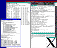</a>

<p>To install NetBSD/pmax onto a harddisk image in the emulator,
follow these instructions:

<p><ol>
  <li>Create an empty harddisk image, which will be the root disk
	that NetBSD installs itself onto:<pre>
	<b>dd if=/dev/zero of=nbsd_pmax.img bs=1024 count=1 seek=3000000</b>

</pre>
  <li>Download a NetBSD CD-ROM iso image:<pre>
	<a href="ftp://ftp.netbsd.org/pub/NetBSD/iso/5.0.2/pmaxcd-5.0.2.iso">ftp://ftp.netbsd.org/pub/NetBSD/iso/5.0.2/pmaxcd-5.0.2.iso</a>

</pre>
  <li>Start the emulator like this:<pre>
	<b>gxemul -X -e 3max -d nbsd_pmax.img -d b:pmaxcd-5.0.2.iso</b>
</pre>
</ol>

<p>If you do not want to use the graphical framebuffer during the 
install, you can skip the <b><tt>-X</tt></b> command line option.
Remember to enter <tt>xterm</tt> instead of <tt>vt100</tt> when asked 
about your terminal type, if you do this.

<p>You can also add <b><tt>-Y 2</tt></b> to the command line options, if 
you feel that the default framebuffer window is too large.

<p>When the installation has finished, the following command should start
NetBSD from the harddisk image:<pre>
	<b>gxemul -X -e 3max -d nbsd_pmax.img</b>
</pre>

and log in as <tt>root</tt>. Type <tt>startx</tt> to start X windows.

<p>(Remove <b><tt>-X</tt></b> if you only want a serial console.)


<p><br>
<a name="netbsdarcinstall"></a>
<h3>NetBSD/arc:</h3>

<p>[Note: This is a <a href="#legacy"><font color="#dd2222"><b>LEGACY MODE</b></font></a>.]

<p>It is possible to install and run <a href="http://www.netbsd.org/ports/arc/">NetBSD/arc</a>
on an emulated Acer PICA-61 in the emulator.

<p>
&nbsp;&nbsp;&nbsp;&nbsp;&nbsp;&nbsp;&nbsp;&nbsp;
<a href="20041024-netbsd-arc-installed.gif">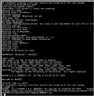</a>

<p>
To install NetBSD/arc from a CDROM image onto an emulated
harddisk image, follow these instructions:

<p>
<ol start="1">
  <li>Create an empty harddisk image, which will be the root disk
	that NetBSD installs itself onto:<pre>
	<b>dd if=/dev/zero of=nbsd_arc.img bs=1024 count=1 seek=1000000</b>

</pre>
  <li>Download a NetBSD/arc CDROM image, and the generic + ramdisk NetBSD/arc kernels:<pre>
	<a href="ftp://ftp.netbsd.org/pub/NetBSD/iso/5.0.1/arccd-5.0.1.iso">ftp://ftp.netbsd.org/pub/NetBSD/iso/5.0.1/arccd-5.0.1.iso</a>
	<a href="ftp://ftp.netbsd.org/pub/NetBSD/NetBSD-5.0.1/arc/binary/kernel/netbsd-GENERIC.gz">ftp://ftp.netbsd.org/pub/NetBSD/NetBSD-5.0.1/arc/binary/kernel/netbsd-GENERIC.gz</a>
	<a href="ftp://ftp.netbsd.org/pub/NetBSD/NetBSD-5.0.1/arc/binary/kernel/netbsd-RAMDISK.gz">ftp://ftp.netbsd.org/pub/NetBSD/NetBSD-5.0.1/arc/binary/kernel/netbsd-RAMDISK.gz</a>

</pre>
  <li>Start the emulator using this command line:<pre>
	<b>gxemul -x -e pica -d nbsd_arc.img -d b:arccd-5.0.1.iso netbsd-RAMDISK.gz</b>

</pre>
	and proceed like you would do if you were installing NetBSD on a real
	PICA-61. (Choose "Use entire disk" when doing the MBR partitioning,
	and choose to install from CD-ROM.)
	<p>
	(Use <tt>-X</tt> if you feel more comfortable with a "graphical" text
	display.)
    <p>
</ol>

<p>You can now use the generic NetBSD/arc kernel to boot from the harddisk 
image, using the following command:<pre>
	<b>gxemul -x -e pica -d nbsd_arc.img netbsd-GENERIC.gz</b>

</pre>


<p><br>
<a name="netbsdhpcmipsinstall"></a>
<h3>NetBSD/hpcmips:</h3>

<p>[Note: This is a <a href="#legacy"><font color="#dd2222"><b>LEGACY MODE</b></font></a>.]

<p>It is possible to install <a
href="http://www.netbsd.org/ports/hpcmips/">NetBSD/hpcmips</a> onto a disk
image, on an an emulated MobilePro 770 or 800. (MobilePro 780 and 880 might
work too, but I don't test those for every release of the emulator. They 
have unaligned framebuffers, and run a bit slower.)

<p>
&nbsp;&nbsp;&nbsp;&nbsp;&nbsp;&nbsp;&nbsp;&nbsp;
<a href="20050427-netbsd-hpcmips-1.png">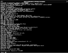</a>
&nbsp;&nbsp;&nbsp;
<a href="20050427-netbsd-hpcmips-2.png">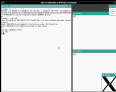</a>

<p>
These instructions show an example of how to install
NetBSD/hpcmips on an emulated MobilePro 770:

<p>
<ol start="1">
  <li>Create an empty harddisk image, which will be the root disk
	that you will install NetBSD/hpcmips onto:<pre>
	<b>dd if=/dev/zero of=nbsd_hpcmips.img bs=1024 count=1 seek=3000000</b>

</pre>
  <li>Download the NetBSD/hpcmips 4.0.1 ISO image, a generic kernel,
	and the installer kernel:<pre>
	<a href="ftp://ftp.netbsd.org/pub/NetBSD/iso/4.0.1/">ftp://ftp.netbsd.org/pub/NetBSD/iso/4.0.1</a>/<a href="ftp://ftp.netbsd.org/pub/NetBSD/iso/4.0.1/hpcmipscd-4.0.1.iso">hpcmipscd-4.0.1.iso</a>
	<a href="ftp://ftp.netbsd.org/pub/NetBSD/NetBSD-4.0.1/hpcmips/binary/kernel/">ftp://ftp.netbsd.org/pub/NetBSD/NetBSD-4.0.1/hpcmips/binary/kernel</a>/<a href="ftp://ftp.netbsd.org/pub/NetBSD/NetBSD-4.0.1/hpcmips/binary/kernel/netbsd-GENERIC.gz">netbsd-GENERIC.gz</a>
	<a href="ftp://ftp.netbsd.org/pub/NetBSD/NetBSD-4.0.1/hpcmips/installation/netbsd.gz">ftp://ftp.netbsd.org/pub/NetBSD/NetBSD-4.0.1/hpcmips/installation/netbsd.gz</a>

</pre>
  <p>
  <li>Start the installation like this:<pre>
	<b>gxemul -e mobilepro770 -X -d nbsd_hpcmips.img -d b:hpcmipscd-4.0.1.iso netbsd.gz</b>

</pre>
	and proceed like you would do if you were installing NetBSD on a real
	MobilePro 770. (Install onto wd0, choose "Use entire disk" when
	doing the MBR partitioning, and choose to install from CD-ROM.)
</ol>

<p>(While it is possible to install and run NetBSD/hpcmips without the <tt>-X</tt>
command line option (i.e. using serial console), NetBSD 4.0.1's default
<tt>/etc/ttys</tt> file after a full install does not have
<tt>/dev/console</tt> enabled, so you need to edit <tt>/etc/ttys</tt>
before you reboot after the install, to be able to log in.)

<p>
If everything worked, NetBSD should now be installed on the disk image.
Use the following command line to boot the emulated hpcmips machine:<pre>
	<b>gxemul -e mobilepro770 -X -d nbsd_hpcmips.img netbsd-GENERIC.gz</b>

</pre>

<p>When you have logged in as <tt>root</tt>, you can use <tt>startx</tt> to
start X Windows, but there is no mouse support yet so only keyboard input 
is available. This makes it a bit akward to use X.


<p><br>
<a name="netbsdcobaltinstall"></a>
<h3>NetBSD/cobalt:</h3>

<p>[Note: This is a <a href="#legacy"><font color="#dd2222"><b>LEGACY MODE</b></font></a>.]

<p><a href="http://www.netbsd.org/ports/cobalt/">NetBSD/cobalt</a> is possible
to install on an emulated Cobalt Cube.

<p>
&nbsp;&nbsp;&nbsp;&nbsp;&nbsp;&nbsp;&nbsp;&nbsp;
<a href="20060812-netbsd-cobalt-3.0.1.png">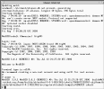</a>

<p>The following instructions will let you install NetBSD/cobalt onto a disk 
image:

<p>
<ol>
  <li>Create an empty harddisk image, which will be the disk image
	that you will install NetBSD/cobalt onto:<pre>
	<b>dd if=/dev/zero of=nbsd_cobalt.img bs=1024 count=1 seek=2700000</b>

</pre>
  <li>Download the generic kernel for Cobalt and the ISO image:<pre>
	<a href="ftp://ftp.netbsd.org/pub/NetBSD/NetBSD-5.0.1/cobalt/binary/kernel/netbsd-GENERIC.gz">ftp://ftp.netbsd.org/pub/NetBSD/NetBSD-5.0.1/cobalt/binary/kernel/netbsd-GENERIC.gz</a>
	<a href="ftp://ftp.netbsd.org/pub/NetBSD/iso/5.0.1/cobaltcd-5.0.1.iso">ftp://ftp.netbsd.org/pub/NetBSD/iso/5.0.1/cobaltcd-5.0.1.iso</a>

</pre>
  <li>Start the installation like this:<pre>
  	<b>gxemul -x -E cobalt -d nbsd_cobalt.img -d bd:cobaltcd-5.0.1.iso -j cobalt/binary/kernel/netbsd-RAMDISK</b>

</pre>
	and proceed like you would do if you were installing NetBSD on a real
	Cobalt. (Install onto <tt>wd0</tt>, choose "Use entire disk" when
	doing the MBR partitioning, and choose to install from CD-ROM device "<tt>wd1d</tt>".)
</ol>

<p>
You should now be able to boot NetBSD/cobalt like this:<pre>
	<b>gxemul -x -E cobalt -d nbsd_cobalt.img netbsd-GENERIC.gz</b>
</pre>


<p><br>
<a name="netbsdevbmipsinstall"></a>
<h3>NetBSD/evbmips:</h3>

<p>[Note: This is a <a href="#legacy"><font color="#dd2222"><b>LEGACY MODE</b></font></a>.]

<p><a href="http://www.netbsd.org/ports/evbmips/">NetBSD/evbmips</a> can run 
in GXemul on an emulated Malta evaluation board, with a 5Kc (MIPS64) or 
4Kc (MIPS32) processor. 5Kc is the default.

<p>&nbsp;&nbsp;&nbsp;&nbsp;&nbsp;&nbsp;&nbsp;&nbsp;
<a href="20060812-netbsd-malta-3.0.1.png"></a>

<p>One way to install the NetBSD/evbmips distribution onto a disk
image is to install the files using another (emulated) machine.

<p>
The following instructions will let you install NetBSD/evbmips onto a disk 
image, from an emulated DECstation 3MAX machine:

<p>
<ol>
  <li>Download a NetBSD/pmax (DECstation) install RAMDISK kernel:<pre>
	<a href="ftp://ftp.netbsd.org/pub/NetBSD/NetBSD-4.0.1/pmax/binary/kernel/netbsd-INSTALL.gz">ftp://ftp.netbsd.org/pub/NetBSD/NetBSD-4.0.1/pmax/binary/kernel/netbsd-INSTALL.gz</a>
</pre>
  <p>
  <li>Create an empty harddisk image, which will be the disk image
	that you will install NetBSD onto:<pre>
	<b>dd if=/dev/zero of=nbsd_malta.img bs=1024 count=1 seek=700000</b>

</pre>
  <li>Download the Malta kernel and the ISO image:<pre>
	<a href="ftp://ftp.netbsd.org/pub/NetBSD/NetBSD-5.0/evbmips/binary/kernel/netbsd-MALTA.gz">ftp://ftp.netbsd.org/pub/NetBSD/NetBSD-5.0/evbmips/binary/kernel/netbsd-MALTA.gz</a>
	<a href="ftp://ftp.netbsd.org/pub/NetBSD/NetBSD-5.0/iso/evbmips-mipselcd-5.0.iso">ftp://ftp.netbsd.org/pub/NetBSD/NetBSD-5.0/iso/evbmips-mipselcd-5.0.iso</a>

</pre>
  <p>
  <li>Start the emulated DECstation machine like this:<pre>
	<b>gxemul -e 3max -d nbsd_malta.img -d evbmips-mipselcd-5.0.iso netbsd-INSTALL.gz</b>

</pre>
  <li>At the <tt>Terminal type? [vt100]</tt> prompt, type <b>CTRL-B</b>
to simulate a CTRL-C sent to NetBSD/pmax. Then execute the following commands:
<p><table border="0"><tr><td><tt>&nbsp;&nbsp;&nbsp;&nbsp;&nbsp;&nbsp;&nbsp;</tt></td><td><pre>
<b>newfs /dev/sd0c
mount /dev/cd0c /mnt
mkdir /mnt2; mount /dev/sd0c /mnt2
cd /mnt2; sh
for a in /mnt/*/binary/sets/[bcemt]*.tgz; do echo $a; tar zxfp $a; done
exit
cd dev; sh ./MAKEDEV all; cd ../etc
echo rc_configured=YES >> rc.conf
echo "/dev/wd0c / ffs rw 1 1" > fstab
cd /; umount /mnt; umount /mnt2; halt</b>
</pre></td></tr></table>
</ol>

<p>You should now be able to boot NetBSD/evbmips using this command:<pre>
	<b>gxemul -x -e malta -d nbsd_malta.img netbsd-MALTA.gz</b>
</pre>

<p>NOTE: To select a 4Kc (MIPS32) CPU instead of the default 5Kc 
(MIPS64) CPU, add <tt><b>-C 4Kc</b></tt> to the command line. With current
NetBSD design, however, there will be little or no difference in functionality, as
NetBSD still runs in 32-bit mode on 64-bit MIPS CPUs. There are two things
that differ:<ol>
  <li>The dynamic translation core runs faster when emulating 32-bit
	processors, so <tt><b>-C 4Kc</b></tt> might make things go faster.
  <li>4Kc only has 16 TLB entries, whereas 5Kc has 48. This makes 4Kc
	emulation slower in general, because there are more TLB misses.
</ol>

<p>The installation instructions above create a filesystem
<i>without</i> a disklabel, so there is only one ffs partition and no
swap. You will need to enter the following things when booting with the
generic kernel:<pre>
	root device (default wd0a): <b>wd0c</b>
	dump device (default wd0b):		<i>(just press enter)</i>
	file system (default generic):		<i>(just press enter)</i>
	init path (default /sbin/init):		<i>(just press enter)</i>
</pre>


<p><br>
<a name="netbsdalgorinstall"></a>
<h3>NetBSD/algor:</h3>

<p>[Note: This is a <a href="#legacy"><font color="#dd2222"><b>LEGACY MODE</b></font></a>.]

<p><a href="http://www.netbsd.org/ports/algor/">NetBSD/algor</a> can
run in GXemul on an emulated Algorithmics P5064 evaluation board.

<p>&nbsp;&nbsp;&nbsp;&nbsp;&nbsp;&nbsp;&nbsp;&nbsp;
<a href="20060814-netbsd-algor-3.0.1.png"></a>

<p>One way to install the NetBSD/algor distribution onto a disk
image is to install the files using another (emulated) machine.

<p>The following instructions will let you install NetBSD/algor onto a disk 
image, from an emulated DECstation 3MAX machine:

<p>
<ol>
  <li>Download a NetBSD/pmax (DECstation) install RAMDISK kernel:<pre>
	<a href="ftp://ftp.netbsd.org/pub/NetBSD/NetBSD-3.1/pmax/binary/kernel/netbsd-INSTALL.gz">ftp://ftp.netbsd.org/pub/NetBSD/NetBSD-3.1/pmax/binary/kernel/netbsd-INSTALL.gz</a>
</pre>
  <p>
  <li>Create an empty harddisk image, which will be the disk image
	that you will install NetBSD/algor onto:<pre>
	<b>dd if=/dev/zero of=nbsd_algor.img bs=1024 count=1 seek=700000</b>

</pre>
  <li>Download the P5064 Algor kernel and the 3.1 ISO image:<pre>
	<a href="ftp://ftp.netbsd.org/pub/NetBSD/NetBSD-3.1/algor/binary/kernel/netbsd-P5064.gz">ftp://ftp.netbsd.org/pub/NetBSD/NetBSD-3.1/algor/binary/kernel/netbsd-P5064.gz</a>
	<a href="ftp://ftp.netbsd.org/pub/NetBSD/iso/3.1/algorcd-3.1.iso">ftp://ftp.netbsd.org/pub/NetBSD/iso/3.1/algorcd-3.1.iso</a>

</pre>
  <p>
  <li>Start the emulated DECstation machine like this:<pre>
	<b>gxemul -e 3max -d nbsd_algor.img -d algorcd-3.1.iso netbsd-INSTALL.gz</b>

</pre>
  <li>At the <tt>Terminal type? [rcons]</tt> prompt, type <b>CTRL-B</b>
to simulate a CTRL-C sent to NetBSD/pmax. Then execute the following commands:
<p><table border="0"><tr><td><tt>&nbsp;&nbsp;&nbsp;&nbsp;&nbsp;&nbsp;&nbsp;</tt></td><td><pre>
<b>newfs /dev/sd0c
mount /dev/cd0c /mnt
mkdir /mnt2; mount /dev/sd0c /mnt2
cd /mnt2; sh
for a in /mnt/*/binary/sets/[bcekmt]*.tgz; do echo $a; tar zxfp $a; done
exit
cd dev; sh ./MAKEDEV all; cd ../etc
echo rc_configured=YES >> rc.conf
echo "/dev/wd0c / ffs rw 1 1" > fstab
cd /; umount /mnt; umount /mnt2; halt</b>
</pre></td></tr></table>
</ol>

<p>You should now be able to boot NetBSD/algor using this command:<pre>
	<b>gxemul -x -e p5064 -d nbsd_algor.img netbsd-P5064.gz</b>
</pre>

<p>The installation instructions above create a filesystem
<i>without</i> a disklabel, so there is only one ffs partition and no
swap. You will need to enter the following things when booting with the
generic kernel:<pre>
	root device (default wd0a): <b>wd0c</b>
	dump device (default wd0b):		<i>(just press enter)</i>
	file system (default generic):		<i>(just press enter)</i>
	init path (default /sbin/init):		<i>(just press enter)</i>
</pre>


<p><br>
<a name="netbsdsgimips"></a>
<h3>NetBSD/sgimips:</h3>

<p>[Note: This is a <a href="#legacy"><font color="#dd2222"><b>LEGACY MODE</b></font></a>.]

<p>
&nbsp;&nbsp;&nbsp;&nbsp;&nbsp;&nbsp;&nbsp;&nbsp;
<a href="20060623-netbsd-sgimips-3.0.png">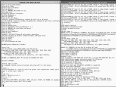</a>

<p><a href="http://www.netbsd.org/ports/sgimips/">NetBSD/sgimips</a> can run
in GXemul on an emulated O2 (SGI-IP32). However, GXemul does not yet
emulate the AHC PCI SCSI controller in the O2. (I have mailed Adaptec
several times, asking for documentation, but never received any reply.)
NetBSD can still run in the emulator, as long as it doesn't use SCSI.

<p>For a simple test with the ramdisk/install kernel, try 
dowloading<pre>
	<a href="ftp://ftp.NetBSD.org/pub/NetBSD/NetBSD-3.1/sgimips/binary/kernel/netbsd-INSTALL32_IP3x.gz">ftp://ftp.NetBSD.org/pub/NetBSD/NetBSD-3.1/sgimips/binary/kernel/netbsd-INSTALL32_IP3x.gz</a>

</pre>and run&nbsp;&nbsp;<b><tt>gxemul -x -e o2 netbsd-INSTALL32_IP3x.gz</tt></b>.

<p>It is possible to set up an environment for netbooting the emulated SGI
machine off of another emulated machine. Performing this setup is quite
time consuming, but necessary:

<p>
<ol>
  <li>First of all, the "<tt>nfs server</tt>" machine must be set up.
	This needs to have a 750 MB <tt>/tftpboot</tt> partition.
	<a href="#netbsdpmaxinstall">Install NetBSD/pmax from CDROM</a>.
	(Don't forget to add the extra partition!)
  <p>
  <li>Configure the nfs server machine to act as an nfs server.
	Start up the emulated DECstation:<pre>
	<b>gxemul -e 3max -d nbsd_pmax.img</b>
</pre>and enter the following commands as <tt>root</tt>
	inside the emulator:
<p><table border="0"><tr><td><tt>&nbsp;&nbsp;&nbsp;&nbsp;&nbsp;&nbsp;&nbsp;</tt></td><td><pre>
<b>echo hostname=server &gt;&gt; /etc/rc.conf
echo ifconfig_le0=\"inet 10.0.0.2\" &gt;&gt; /etc/rc.conf
echo nameserver 10.0.0.254 &gt;&gt; /etc/resolv.conf
echo 10.0.0.254 &gt; /etc/mygate
echo /tftpboot -maproot=root 10.0.0.1 &gt; /etc/exports
echo rpcbind=YES &gt;&gt; /etc/rc.conf
echo nfs_server=YES &gt;&gt; /etc/rc.conf
echo mountd=YES &gt;&gt; /etc/rc.conf
echo bootparamd=YES &gt;&gt; /etc/rc.conf
printf "client root=10.0.0.2:/tftpboot \\\n swap=10.0.0.2:/tftpboot/swap\n" &gt; /etc/bootparams
echo "bootps dgram udp wait root /usr/sbin/bootpd bootpd -d 4 -h 10.0.0.2" &gt;&gt; /etc/inetd.conf
cat &gt;&gt; /etc/bootptab
client:\
        :ht=ether:\
        :ha=102030000010:\
        :sm=255.0.0.0:\
        :lg=10.0.0.254:\
        :ip=10.0.0.1:\
        :rp=/tftpboot:
</b>(press CTRL-D)
<b>echo "10:20:30:00:00:10 client" &gt; /etc/ethers
echo 10.0.0.1 client &gt; /etc/hosts
reboot</b>
</pre></td></tr></table>
  <p>
  <li>Download the files corresponding to a NetBSD/sgimips CD-ROM iso image, and the
	GENERIC and INSTALL kernels:<pre>
	<a href="ftp://ftp.NetBSD.org/pub/NetBSD/NetBSD-5.0/sgimips/binary/kernel/netbsd-GENERIC32_IP3x.gz">ftp://ftp.NetBSD.org/pub/NetBSD/NetBSD-5.0/sgimips/binary/kernel/netbsd-GENERIC32_IP3x.gz</a>
	<a href="ftp://ftp.NetBSD.org/pub/NetBSD/NetBSD-5.0/sgimips/binary/kernel/netbsd-INSTALL32_IP3x.gz">ftp://ftp.NetBSD.org/pub/NetBSD/NetBSD-5.0/sgimips/binary/kernel/netbsd-INSTALL32_IP3x.gz</a>

	wget -np -l 0 -r <a href="ftp://ftp.netbsd.org/pub/NetBSD/NetBSD-5.0/sgimips/binary/sets/">ftp://ftp.netbsd.org/pub/NetBSD/NetBSD-5.0/sgimips/binary/sets/</a>
	mkisofs -U -o sgimips.iso ftp.netbsd.org/pub/NetBSD/NetBSD-5.0

</pre>
  <li>Start the DECstation emulation again:<pre>
	<b>gxemul -e 3max -d nbsd_pmax.img -d sgimips.iso</b>

</pre>and extract the files from the sgimips CD-ROM image to the
	DECstation disk image:
<p><table border="0"><tr><td><tt>&nbsp;&nbsp;&nbsp;&nbsp;&nbsp;&nbsp;&nbsp;</tt></td><td><pre>
<b>cd /tftpboot; mount /dev/cd0a /mnt
for a in /mnt/*/binary/sets/[bcegmt]*.tgz; do echo $a; tar zxfp $a; done
echo 10.0.0.2:/tftpboot / nfs rw 0 0 &gt; /tftpboot/etc/fstab
echo rc_configured=YES &gt;&gt; /tftpboot/etc/rc.conf
echo 10.0.0.254 &gt;&gt; /tftpboot/etc/mygate
echo nameserver 10.0.0.254 &gt;&gt; /tftpboot/etc/resolv.conf
echo rc_configured=YES &gt;&gt; /tftpboot/etc/rc.conf
dd if=/dev/zero of=swap bs=1024 count=65536
cd /; umount /mnt; halt</b>
</pre></td></tr></table>
  <p>
  <li>Create a configuration file called <tt>config_client</tt>:
<table border="0"><tr><td><tt>&nbsp;&nbsp;&nbsp;&nbsp;&nbsp;&nbsp;&nbsp;</tt></td><td><pre>
<font color="#2020cf">!  Configuration file for running NetBSD/sgimips diskless with
!  a NetBSD/pmax machine as the nfs server.</font>

<b>net(
	add_remote("localhost:12444")   </b>! the server<b>
	local_port(12445)               </b>! the client<b>
)

machine(
	name("client machine")
	serial_nr(1)

        type("sgi")
        subtype("o2")

        load("netbsd-INSTALL32_IP3x.gz")</b>
        ! load("netbsd-GENERIC32_IP3x.gz")<b>
)
</b>
</pre></td></tr></table>
	... and another configuration file for the server,
	<tt>config_server</tt>:
<table border="0"><tr><td><tt>&nbsp;&nbsp;&nbsp;&nbsp;&nbsp;&nbsp;&nbsp;</tt></td><td><pre>
<b>net(
	local_port(12444)               </b>! the server<b>
	add_remote("localhost:12445")   </b>! the client<b>
)

machine(
	name("nfs server")
	serial_nr(2)

        type("dec")
        subtype("5000/200")

        disk("nbsd_pmax.img")
)
</b>
</pre></td></tr></table>
  <li>Boot the "<tt>nfs server</tt>" and the NetBSD/sgimips
	"<tt>client machine</tt>" as two separate emulator instances:<pre>
	in one xterm:
	<b>gxemul @config_server</b>

	and then, in another xterm:
	<b>gxemul @config_client</b>

</pre>
  <li>In the NetBSD/sgimips window, choose "<tt>x: Exit Install System</tt>"
	in the installer's main menu, and then type:<pre>
	<b>ifconfig mec0 10.0.0.1; route add default 10.0.0.254</b>
	<b>mount -v 10.0.0.2:/tftpboot /mnt</b>
	<b>cd /mnt/dev; ./MAKEDEV all; cd /; umount /mnt</b>
	<b>halt</b>
</pre>Then, once the client machine has halted, log in as <tt>root</tt>
	on the server machine and type <tt><b>reboot</b></tt>.
  <p>
  <li>Once everything has been set up correctly, change
	<tt>netbsd-INSTALL32_IP3x.gz</tt> in <tt>config_client</tt> to
	<tt>netbsd-GENERIC32_IP3x.gz</tt> (the GENERIC kernel).
</ol>

<p>You might want to log in as <tt>root</tt> on the server machine, and
run <tt>tcpdump -lnvv</tt> or similar, to see that what the client machine
actually does on the network.

<p>It should now be possible to boot NetBSD/sgimips using the NetBSD/pmax
nfs server, using the following commands: (NOTE! Execute these two 
commands in separate xterms!)<pre>
	<b>gxemul @config_server</b>
	<b>gxemul @config_client</b>
</pre>

<p>When asked for "<tt>root device:</tt>" etc. on the client machine, enter
the following values:<pre>
	root device: <b>mec0</b>
	dump device: 				<b>(leave blank)</b>
	file system (default generic): 		<b>(leave blank)</b>
	..
	init path (default /sbin/init):		<b>(leave blank)</b>
	Enter pathname of shell or RETURN for /bin/sh:	<b>(leave blank)</b>
	Terminal type? [unknown] <b>xterm</b>
	..
	# <b>exit</b>			(to leave the single-user shell)
</pre>

<p>Note: Netbooting like this is very slow, so you need a lot of patience.
For example, when NetBSD says "<tt>nfs_boot: trying DHCP/BOOTP</tt>",
there will be a long pause, even on a very fast host machine. The reason
for this is mostly because the emulator doesn't deal with timing issues
very well, but also because NetBSD tries IPv6 first, before falling back
to IPv4.


<p><br>
<a name="netbsdcatsinstall"></a>
<h3>NetBSD/cats:</h3>

<p>[Note: This is a <a href="#legacy"><font color="#dd2222"><b>LEGACY MODE</b></font></a>.]

<p>It is possible to install and run
<a href="http://www.netbsd.org/ports/cats/">NetBSD/cats</a> in GXemul.

<p>&nbsp;&nbsp;&nbsp;&nbsp;&nbsp;&nbsp;&nbsp;&nbsp;
<a href="20051007-netbsd-cats-installed.png">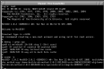</a>

<p>
To install NetBSD/cats onto a disk image, follow these instructions:

<p>
<ol start="1">
  <li>Create an empty harddisk image, which will be the root disk
	that you will install NetBSD/cats onto:<pre>
	<b>dd if=/dev/zero of=nbsd_cats.img bs=1024 count=1 seek=3000000</b>

</pre>
  <li>Download the NetBSD/cats ISO image and the generic and install kernels:<pre>
	<a href="ftp://ftp.netbsd.org/pub/NetBSD/iso/5.0/catscd-5.0.iso">ftp://ftp.netbsd.org/pub/NetBSD/iso/5.0/catscd-5.0.iso</a>
	<a href="ftp://ftp.netbsd.org/pub/NetBSD/NetBSD-5.0/cats/binary/kernel/netbsd.aout-GENERIC.gz">ftp://ftp.netbsd.org/pub/NetBSD/NetBSD-5.0/cats/binary/kernel/netbsd.aout-GENERIC.gz</a>
	<a href="ftp://ftp.netbsd.org/pub/NetBSD/NetBSD-5.0/cats/binary/kernel/netbsd.aout-INSTALL.gz">ftp://ftp.netbsd.org/pub/NetBSD/NetBSD-5.0/cats/binary/kernel/netbsd.aout-INSTALL.gz</a>

</pre>
  <p>
  <li>Start the installation like this:<pre>
	<b>gxemul -XEcats -d nbsd_cats.img -d catscd-5.0.iso netbsd.aout-INSTALL.gz</b>

</pre>
	and proceed like you would do if you were installing NetBSD on a real
	CATS from CDROM.
</ol>

<p>Note that there are <i>long</i> delays during bootup.

<p>Alternatively, to install from FTP, you can skip downloading the ISO,
and start the install without <tt>-d catscd-5.0.iso</tt>. Suitable network 
settings are IP 10.0.0.1, gateway/default route 10.0.0.254, netmask 
255.0.0.0, nameserver 10.0.0.254.

<p>If everything worked, NetBSD should now be installed on the disk image.
Use the following command line to boot the emulated CATS machine:<pre>
	<b>gxemul -XEcats -d nbsd_cats.img netbsd.aout-GENERIC.gz</b>

</pre>


<p><br>
<a name="netbsdevbarminstall"></a>
<h3>NetBSD/evbarm:</h3>

<p>[Note: This is a <a href="#legacy"><font color="#dd2222"><b>LEGACY MODE</b></font></a>.]

<p><a href="http://www.netbsd.org/ports/evbarm/">NetBSD/evbarm</a> can
run in GXemul on an emulated IQ80321 evaluation board.

<p>&nbsp;&nbsp;&nbsp;&nbsp;&nbsp;&nbsp;&nbsp;&nbsp;
<a href="20060218-netbsd-evbarm.png"></a>

<p>It is tricky to install, because there is (as far as I know) no INSTALL
kernel. One way to install the NetBSD/evbarm distribution onto a disk
image is to install the files using another (emulated) machine.

<p>The following instructions will let you install NetBSD/evbarm onto a disk 
image, from an emulated CATS machine:

<p>
<ol>
  <li>Download a NetBSD/cats 3.1 ramdisk kernel:<pre>
	<b>wget <a href="ftp://ftp.netbsd.org/pub/NetBSD/NetBSD-3.1/cats/binary/kernel/netbsd.aout-INSTALL.gz">ftp://ftp.netbsd.org/pub/NetBSD/NetBSD-3.1/cats/binary/kernel/netbsd.aout-INSTALL.gz</a></b>

</pre>
  <li>Create an empty harddisk image, which will be the disk image
	that you will install NetBSD/evbarm onto:<pre>
	<b>dd if=/dev/zero of=nbsd_iq80321.img bs=1024 count=1 seek=999000</b>

</pre>
  <li>Download an IQ80321 kernel with wdc support, and the 2.1 ISO image:<pre>
	<a href="ftp://ftp.netbsd.org/pub/NetBSD/NetBSD-2.1/evbarm/binary/kernel/">ftp://ftp.netbsd.org/pub/NetBSD/NetBSD-2.1/evbarm/binary/kernel</a>/<a href="ftp://ftp.netbsd.org/pub/NetBSD/NetBSD-2.1/evbarm/binary/kernel/netbsd-wd0-IQ80321.gz">netbsd-wd0-IQ80321.gz</a>
	<a href="ftp://ftp.netbsd.org/pub/NetBSD/iso/2.1/evbarmcd.iso">ftp://ftp.netbsd.org/pub/NetBSD/iso/2.1/evbarmcd.iso</a>

</pre>
  <p>
  <li>Now let's extract the files from the CD-ROM image onto the IQ80321's disk image. Start the 
	CATS machine using the following command line:<pre>
	<b>gxemul -XEcats -d nbsd_iq80321.img -d evbarmcd.iso netbsd.aout-INSTALL.gz</b>

</pre>Exit from the installer, and execute the following commands as <tt>root</tt>:
<p><table border="0"><tr><td><tt>&nbsp;&nbsp;&nbsp;&nbsp;&nbsp;&nbsp;&nbsp;</tt></td><td><pre>

<b>disklabel -I -i wd0</b>
    (enter suitable commands, e.g. <i>a, 4.2BSD, 1c, 750M, b,
     swap, a, 200M, P, W, y, Q</i>)
<b>newfs /dev/wd0a; mount /dev/wd0a /mnt2; cd /mnt2
mount /dev/cd0a /mnt; sh
for a in /mnt/*/binary/sets/[bcegmt]*.tgz; do echo $a; tar zxfp $a; done
exit
cd dev; sh ./MAKEDEV all; cd ../etc
echo rc_configured=YES &gt;&gt; rc.conf
echo "/dev/wd0a / ffs rw 1 1" &gt; fstab
echo "/dev/wd0b none swap sw 0 0" &gt;&gt; fstab
cd /; umount /mnt; umount /mnt2; sync; halt</b>
</pre></td></tr></table>
</ol>

<p>You should now be able to boot NetBSD/evbarm using this command:<pre>
	<b>gxemul -x -E iq80321 -d nbsd_iq80321.img netbsd-wd0-IQ80321.gz</b>
</pre>


<p><br>
<a name="netbsdnetwinderinstall"></a>
<h3>NetBSD/netwinder:</h3>

<p>[Note: This is a <a href="#legacy"><font color="#dd2222"><b>LEGACY MODE</b></font></a>.]

<p>It is possible to run <a 
href="http://www.netbsd.org/ports/netwinder/">NetBSD/netwinder</a>
in GXemul.

<p>&nbsp;&nbsp;&nbsp;&nbsp;&nbsp;&nbsp;&nbsp;&nbsp;
<a href="20060724-netbsd-netwinder-1.png">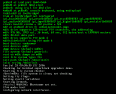</a>
&nbsp;&nbsp;&nbsp;<a href="20060724-netbsd-netwinder-2.png"></a>

<p>There is no INSTALL ramdisk kernel, so one way to install the 
NetBSD/netwinder distribution onto a disk image is to install the files 
using another (emulated) machine. The following instructions will let you 
install the NetBSD/netwinder distribution onto a disk image, from an 
emulated DECstation 3MAX machine:

<p>
<ol>
  <li>Download a NetBSD/pmax (DECstation) install RAMDISK kernel:<pre>
	<a href="ftp://ftp.netbsd.org/pub/NetBSD/NetBSD-3.1/pmax/binary/kernel/netbsd-INSTALL.gz">ftp://ftp.netbsd.org/pub/NetBSD/NetBSD-3.1/pmax/binary/kernel/netbsd-INSTALL.gz</a>
</pre>
  <p>
  <li>Create an empty harddisk image, which will be the disk image
	that you will install NetBSD onto:<pre>
	<b>dd if=/dev/zero of=nbsd_netwinder.img bs=1024 count=1 seek=999000</b>

</pre>
  <li>Download the generic kernel and the 3.1 ISO image:<pre>
	<a href="ftp://ftp.netbsd.org/pub/NetBSD/NetBSD-3.1/netwinder/binary/kernel/netbsd-GENERIC.gz">ftp://ftp.netbsd.org/pub/NetBSD/NetBSD-3.1/netwinder/binary/kernel/netbsd-GENERIC.gz</a>
	<a href="ftp://ftp.netbsd.org/pub/NetBSD/iso/3.1/netwindercd-3.1.iso">ftp://ftp.netbsd.org/pub/NetBSD/iso/3.1/netwindercd-3.1.iso</a>

</pre>
  <p>
  <li>Start the emulated DECstation machine like this:<pre>
	<b>gxemul -e 3max -d nbsd_netwinder.img -d netwindercd-3.1.iso netbsd-INSTALL.gz</b>

</pre>
  <li>At the <tt>Terminal type? [rcons]</tt> prompt, type <b>CTRL-B</b>
to simulate a CTRL-C sent to NetBSD/pmax. Then execute the following commands:
<p><table border="0"><tr><td><tt>&nbsp;&nbsp;&nbsp;&nbsp;&nbsp;&nbsp;&nbsp;</tt></td><td><pre>
<b>newfs /dev/sd0c
mount /dev/cd0c /mnt
mkdir /mnt2; mount /dev/sd0c /mnt2
cd /mnt2; sh
for a in /mnt/*/binary/sets/*.tgz; do echo $a; tar zxfp $a; done
exit
cd dev; sh ./MAKEDEV all; cd ../etc
echo rc_configured=YES >> rc.conf
echo "/dev/wd0c / ffs rw 1 1" > fstab
cd /; umount /mnt; umount /mnt2; halt</b>
</pre></td></tr></table>
</ol>

<p>NetBSD/netwinder is now installed on the disk image. The following command
line can be used to start NetBSD/netwinder:<pre>
	<b>gxemul -X -E netwinder -d nbsd_netwinder.img netbsd-GENERIC.gz</b>
</pre>

<p>This will result in a 1024x768 framebuffer. Add <tt>-Y2</tt> to the 
command line if you want to scale it down to 512x384.

<p>Note: The installation instructions above create a filesystem
<i>without</i> a disklabel, so there is only one ffs partition and no
swap. You will need to enter the following things when booting with the
generic kernel:<pre>
	root device (default wd0a): <b>wd0c</b>
	dump device (default wd0b): <i>(just press enter)</i>
	file system (default generic):    <i>(just press enter)</i>
	init path (default /sbin/init):   <i>(just press enter)</i>
</pre>

<p>Known bugs/problems:

<ul>
	<li>There is a long delay when starting up NetBSD/netwinder
		(several seconds even on a very fast host machine),
		so you need to be patient.
	<li>There is a minor bug in the keyboard device, so you need to
		press a key (any key) before typing wd0c.
	<li>When halting/rebooting NetBSD/netwinder, the emulator
		prints a message saying something about an internal
		error. This doesn't matter; ignore the message.
</ul>


<p><br>
<a name="netbsdprepinstall"></a>
<h3>NetBSD/prep:</h3>

<p>[Note: This is a <a href="#legacy"><font color="#dd2222"><b>LEGACY MODE</b></font></a>.]

<p>It is possible to install and run <a 
href="http://www.netbsd.org/ports/prep/">NetBSD/prep</a> 2.1 in GXemul on 
an emulated IBM 6050 (PowerPC) machine. (Newer versions of NetBSD/prep use 
the wdc controller in a way which isn't implemented in GXemul yet, or 
there are bugs in GXemul's PowerPC CPU emulation.)

<p>&nbsp;&nbsp;&nbsp;&nbsp;&nbsp;&nbsp;&nbsp;&nbsp;
<a href="20051123-netbsd-prep.png">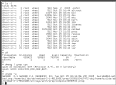</a>

<p>To install NetBSD/prep onto a disk image, follow these instructions:

<p>
<ol start="1">
  <li>Create an empty harddisk image, which will be the root disk
	that you will install NetBSD/prep onto:<pre>
    <b>dd if=/dev/zero of=nbsd_prep.img bs=1024 count=1 seek=1000000</b>

</pre>
  <li>Download the NetBSD/prep 2.1 ISO image and the generic kernel:<pre>
    <a href="ftp://ftp.netbsd.org/pub/NetBSD/iso/2.1/prepcd.iso">ftp://ftp.netbsd.org/pub/NetBSD/iso/2.1/prepcd.iso</a>
    <a href="ftp://ftp.netbsd.org/pub/NetBSD/NetBSD-2.1/prep/binary/kernel/netbsd-GENERIC.gz">ftp://ftp.netbsd.org/pub/NetBSD/NetBSD-2.1/prep/binary/kernel/netbsd-GENERIC.gz</a>

</pre>
  <p>
  <li>Start the installation like this:<pre>
    <b>gxemul -X -e ibm6050 -d nbsd_prep.img -d rdb:prepcd.iso -j prep/binary/kernel/netbsd-INSTALL.gz</b>

</pre>
  <p>
  <li>Installation is a bit unsmooth, possibly due to bugs in GXemul,
	possibly due to bugs in NetBSD itself; others have been having
	problems on real hardware: <a href="http://mail-index.NetBSD.org/port-prep/2005/11/25/0004.html">http://mail-index.NetBSD.org/port-prep/2005/11/25/0004.html</a>.
	Creating an MBR slice and a disklabel with sysinst bugs out, so
	some things have to be done manually:<p>
	At "<tt>(I)nstall, (S)hell, or (H)alt</tt>", choose
		<tt><b><u>s</u></b></tt>.
	<br><tt># <b><u>fdisk -u wd0</u></b></tt>
	<br><tt>Do you want to change our idea of what BIOS thinks? [n]</tt>
		(just press <b>ENTER</b>)
	<br><tt>Which partition do you want to change?: [none] <b><u>0</u></b></tt>
	<br><tt>sysid: ... </tt> (just press <B>ENTER</b>)
	<br><tt>start: ... <b><u>1cyl</u></b></tt>
	<br><tt>size: ... </tt> (just press <B>ENTER</b>)
	<br><tt>Which partition do you want to change?: [none]</tt> (press <b>ENTER</b>)
	<br><tt>Should we write new partition table? [n] <b><u>y</u></b></tt>
	<br><tt># <b><u>disklabel -I -i wd0</u></b></tt>
	<br><tt>partition&gt; <b><u>a</u></b></tt>
	<br><tt>Filesystem type [?] [unused]: <b><u>4.2BSD</u></b></tt>
	<br><tt>Start offset ('x' to start after partition 'x') [0c, 0s, 0M]: <b><u>1c</u></b></tt>
	<br><tt>Partition size ('$' for all remaining) [0c, 0s, 0M]: <b><u>900M</u></b></tt>
	<br><tt>partition&gt; <b><u>b</u></b></tt>
	<br><tt>Filesystem type [?] [unused]: <b><u>swap</u></b></tt>
	<br><tt>Start offset ('x' to start after partition 'x') [0c, 0s, 0M]: <b><u>a</u></b></tt>
	<br><tt>Partition size ('$' for all remaining) [0c, 0s, 0M]: <b><u>$</u></b></tt>
	<br><tt>partition&gt; <b><u>W</u></b></tt>
	<br><tt>Label disk [n]? <b><u>y</u></b></tt>
	<br><tt>partition&gt; <b><u>Q</u></b></tt>
	<br><tt># <b><u>newfs wd0a</u></b></tt>
	<br><tt># <b><u>sysinst</u></b></tt>
	<br>Choose to install onto <b>wd0</b>. Choose
		"<tt>a: Edit the MBR partition table</tt>"
		when presented with that option.
	<br>Choose the 'a' partition/slice,
		set the 'e' ("active") and 'f' ("install") fields to <b>Yes</b>,
		and then choose "<tt>x: Partition table OK</tt>".
	<br>Choose "<tt>b: Use existing partition sizes</tt>" in the next
		menu.
	<br>Select partition 'a' and press ENTER. Set field 'k' (mount point)
		to '<tt><b>/</b></tt>'.
	<br>Get out of the partitioner by selecting
		"<tt>x: Partition sizes ok</tt>" twice.
	<br>At "<tt>Write outside MBR partition? [n]:</tt>", just press
		<b>ENTER</b>.
	<br>Install from CD-ROM, device <b>wd1c</b>.
</ol>

<p>If everything worked, NetBSD should now be installed on the disk image.
Use the following command line to boot the emulated machine:<pre>
	<b>gxemul -X -e ibm6050 -d nbsd_prep.img netbsd-GENERIC.gz</b>

</pre>

<p>When asked which the root device is, type <tt><b>wd0</b></tt> and
just press ENTER to select the default values for dump device, file
system type, and init path.


<p><br>
<a name="netbsdmacppcinstall"></a>
<h3>NetBSD/macppc:</h3>

<p>[Note: This is a <a href="#legacy"><font color="#dd2222"><b>LEGACY MODE</b></font></a>.]

<p>It is possible to install and run <a 
href="http://www.netbsd.org/ports/macppc/">NetBSD/macppc</a> in GXemul on 
an emulated generic PowerPC machine. No specific Machintosh model is 
emulated, but it is enough to for NetBSD to recognize it.

<p>&nbsp;&nbsp;&nbsp;&nbsp;&nbsp;&nbsp;&nbsp;&nbsp;
<a href="20070318-netbsd-macppc.png">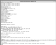</a>

<p>To install NetBSD/macppc onto a disk image, follow these instructions:

<p>
<ol start="1">
  <li>Create an empty harddisk image, which will be the root disk
	that you will install NetBSD/macppc onto:<pre>
    <b>dd if=/dev/zero of=nbsd_macppc.img bs=1024 count=1 seek=3000000</b>

</pre>
  <li>Download the NetBSD/macppc 4.0.1 ISO image and a generic kernel:<pre>
    <a href="ftp://ftp.netbsd.org/pub/NetBSD/iso/4.0.1/macppccd-4.0.1.iso">ftp://ftp.netbsd.org/pub/NetBSD/iso/4.0.1/macppccd-4.0.1.iso</a>
    <a href="ftp://ftp.netbsd.org/pub/NetBSD/NetBSD-4.0.1/macppc/binary/kernel/">ftp://ftp.netbsd.org/pub/NetBSD/NetBSD-4.0.1/macppc/binary/kernel</a>/<a href="ftp://ftp.netbsd.org/pub/NetBSD/NetBSD-4.0.1/macppc/binary/kernel/netbsd-GENERIC.MP.gz">netbsd-GENERIC.MP.gz</a>

</pre>
  <p>
  <li>Start the installation like this:<pre>
    <b>gxemul -x -e g4 -d nbsd_macppc.img -d b:macppccd-4.0.1.iso -j macppc/binary/kernel/netbsd-INSTALL</b>

</pre>
	and continue as you would do when installing NetBSD on a real
	machine.
</ol>

<p>If everything worked, NetBSD/macppc should now be installed on
the disk image.

<p>Use the following command line to boot the emulated machine:<pre>
	<b>gxemul -x -e g4 -d nbsd_macppc.img netbsd-GENERIC.MP.gz</b>

</pre>

<p>If asked about <tt>root device</tt>, enter <tt><b>wd0</b></tt>.


<p><br>
<a name="netbsdpmppc"></a>
<h3>NetBSD/pmppc:</h3>

<p>[Note: This is a <a href="#legacy"><font color="#dd2222"><b>LEGACY MODE</b></font></a>.]

<p><a href="http://www.netbsd.org/ports/pmppc/">NetBSD/pmppc</a> can 
run in GXemul on an emulated Artesyn PM/PPC board. Currently, no SCSI or other
disk controller is emulated for this machine type, but it is possible to run
NetBSD with root-on-nfs.

<p>&nbsp;&nbsp;&nbsp;&nbsp;&nbsp;&nbsp;&nbsp;&nbsp;
<a href="20070616-netbsd-pmppc-diskless.png">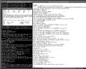</a>

<p>These setup steps will let you run NetBSD/pmppc with root-on-nfs:

<p>
<ol>
  <li>First of all, the "<tt>nfs server</tt>" machine must be set up.
	This needs to have a 750 MB <tt>/tftpboot</tt> partition.
	<a href="#netbsdpmaxinstall">Install NetBSD/pmax 3.1 from CDROM</a>.
	(Don't forget to add the extra partition!)
  <p>
  <li>Configure the nfs server machine to act as an nfs server.
	Start up the emulated DECstation:<pre>
	<b>gxemul -e 3max -d nbsd_pmax.img</b>
</pre>and enter the following commands as <tt>root</tt>
	inside the emulator:
<p><table border="0"><tr><td><tt>&nbsp;&nbsp;&nbsp;&nbsp;&nbsp;&nbsp;&nbsp;</tt></td><td><pre>
<b>echo hostname=server &gt;&gt; /etc/rc.conf
echo ifconfig_le0=\"inet 10.0.0.2\" &gt;&gt; /etc/rc.conf
echo nameserver 10.0.0.254 &gt;&gt; /etc/resolv.conf
echo 10.0.0.254 &gt; /etc/mygate
echo /tftpboot -maproot=root 10.0.0.1 &gt; /etc/exports
echo rpcbind=YES &gt;&gt; /etc/rc.conf
echo nfs_server=YES &gt;&gt; /etc/rc.conf
echo mountd=YES &gt;&gt; /etc/rc.conf
echo bootparamd=YES &gt;&gt; /etc/rc.conf
printf "client root=10.0.0.2:/tftpboot \\\n swap=10.0.0.2:/tftpboot/swap\n" &gt; /etc/bootparams
echo "bootps dgram udp wait root /usr/sbin/bootpd bootpd -d 4 -h 10.0.0.2" &gt;&gt; /etc/inetd.conf
cat &gt;&gt; /etc/bootptab
client:\
        :ht=ether:\
        :ha=102030000010:\
        :sm=255.0.0.0:\
        :lg=10.0.0.254:\
        :ip=10.0.0.1:\
        :rp=/tftpboot:
</b>(press CTRL-D)
<b>echo "10:20:30:00:00:10 client" &gt; /etc/ethers
echo 10.0.0.1 client &gt; /etc/hosts
reboot</b>
</pre></td></tr></table>
  <p>
  <li>Download the NetBSD/pmppc CD-ROM iso image, and the GENERIC kernel:<pre>
	<a href="ftp://ftp.netbsd.org/pub/NetBSD/iso/3.1/pmppccd-3.1.iso">ftp://ftp.netbsd.org/pub/NetBSD/iso/3.1/pmppccd-3.1.iso</a>
	<a href="ftp://ftp.NetBSD.org/pub/NetBSD/NetBSD-3.1/pmppc/binary/kernel/netbsd-PMPPC.gz">ftp://ftp.NetBSD.org/pub/NetBSD/NetBSD-3.1/pmppc/binary/kernel/netbsd-PMPPC.gz</a>

</pre>
  <li>Start the DECstation emulation again:<pre>
	<b>gxemul -e 3max -d nbsd_pmax.img -d pmppccd-3.1.iso</b>

</pre>and extract the files from the PM/PPC CD-ROM image to the
	DECstation disk image:
<p><table border="0"><tr><td><tt>&nbsp;&nbsp;&nbsp;&nbsp;&nbsp;&nbsp;&nbsp;</tt></td><td><pre>
<b>cd /tftpboot; mount /dev/cd0a /mnt
for a in /mnt/*/binary/sets/[bcemt]*; do echo $a; tar zxfp $a; done
echo 10.0.0.2:/tftpboot / nfs rw 0 0 &gt; /tftpboot/etc/fstab
echo rc_configured=YES &gt;&gt; /tftpboot/etc/rc.conf
echo 10.0.0.254 &gt;&gt; /tftpboot/etc/mygate
echo nameserver 10.0.0.254 &gt;&gt; /tftpboot/etc/resolv.conf
echo rc_configured=YES &gt;&gt; /tftpboot/etc/rc.conf
dd if=/dev/zero of=swap bs=1024 count=65536
cd /tftpboot/dev; sh MAKEDEV all
cd /; umount /mnt; halt</b>
</pre></td></tr></table>
  <p>
  <li>Create a configuration file called <tt>config_client</tt>:
<table border="0"><tr><td><tt>&nbsp;&nbsp;&nbsp;&nbsp;&nbsp;&nbsp;&nbsp;</tt></td><td><pre>
<font color="#2020cf">!  Configuration file for running NetBSD/pmppc diskless with
!  a NetBSD/pmax machine as the nfs server.</font>

<b>net(
	add_remote("localhost:12444")   </b>! the server<b>
	local_port(12445)               </b>! the client<b>
)

machine(
	name("client machine")
	serial_nr(1)

        type("pmppc")

        load("netbsd-PMPPC.gz")</b>
)
</b>
</pre></td></tr></table>
	... and another configuration file for the server,
	<tt>config_server</tt>:
<table border="0"><tr><td><tt>&nbsp;&nbsp;&nbsp;&nbsp;&nbsp;&nbsp;&nbsp;</tt></td><td><pre>
<b>net(
	local_port(12444)               </b>! the server<b>
	add_remote("localhost:12445")   </b>! the client<b>
)

machine(
	name("nfs server")
	serial_nr(2)

        type("dec")
        subtype("5000/200")

        disk("nbsd_pmax.img")
)
</b>
</pre></td></tr></table>
</ol>

<p>It should now be possible to boot NetBSD/pmppc using the NetBSD/pmax
nfs server, using the following commands: (NOTE! Execute these two 
commands in separate xterms!)<pre>
	<b>gxemul @config_server</b>
	<b>gxemul @config_client</b>
</pre>

<p>You might want to log in as <tt>root</tt> on the server machine, and
run <tt>tcpdump -lnvv</tt> or similar, to see that what the client machine
actually does on the network.

<p>When asked for "<tt>root device:</tt>" etc. on the client machine, enter
the following values:<pre>
	root device: <b>tlp0</b>
	dump device: 				<b>(leave blank)</b>
	file system (default generic): 		<b>(leave blank)</b>
	..
	init path (default /sbin/init):		<b>(leave blank)</b>
</pre>


<p><br>
<a name="netbsdlandiskinstall"></a>
<h3>NetBSD/landisk:</h3>

<p>[Note: This is a <a href="#legacy"><font color="#dd2222"><b>LEGACY MODE</b></font></a>.]

<p><a href="http://www.netbsd.org/ports/landisk/">NetBSD/landisk</a> can
run in GXemul.

<p>&nbsp;&nbsp;&nbsp;&nbsp;&nbsp;&nbsp;&nbsp;&nbsp;
<a href="20070224-netbsd-landisk.png">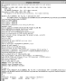</a>

<p>The NetBSD/landisk distribution does not include any INSTALL kernel, 
so it must be installed using another (emulated) machine.

<p>The following instructions will let you install NetBSD/landisk onto a disk 
image, using an emulated CATS machine:

<p>
<ol>
  <li>Download a NetBSD/cats install kernel:<pre>
	<a href="ftp://ftp.netbsd.org/pub/NetBSD/NetBSD-4.0.1/cats/binary/kernel/netbsd.aout-INSTALL.gz">ftp://ftp.netbsd.org/pub/NetBSD/NetBSD-4.0.1/cats/binary/kernel/netbsd.aout-INSTALL.gz</a>
</pre>
  <p>
  <li>Create an empty harddisk image, which will be the disk image
	that you will install NetBSD/landisk onto:<pre>
	<b>dd if=/dev/zero of=nbsd_landisk.img bs=1024 count=1 seek=900000</b>

</pre>
  <p>
  <li>Download NetBSD/landisk and make an iso image of it:<pre>
	<b>wget -np -l 0 -r <a href="ftp://ftp.netbsd.org/pub/NetBSD/NetBSD-5.0.1/landisk">ftp://ftp.netbsd.org/pub/NetBSD/NetBSD-5.0.1/landisk</a>
	cp ftp.netbsd.org/pub/NetBSD/NetBSD-5.0.1/landisk/binary/kernel/netbsd-GENERIC.gz .
	mkisofs -U -o landisk.iso ftp.netbsd.org/pub/NetBSD/NetBSD-5.0.1</b>
</pre>

  <p>
  <li>Start the emulated CATS machine like this:<pre>
	<b>gxemul -XEcats -d nbsd_landisk.img -d landisk.iso netbsd.aout-INSTALL.gz</b>

</pre>
  <li>Exit the installer, then execute the following commands:
<p><table border="0"><tr><td><tt>&nbsp;&nbsp;&nbsp;&nbsp;&nbsp;&nbsp;&nbsp;</tt></td><td><pre>
<b>disklabel -i -I wd0</b>    (for example 'a', '4.2BSD', '1c',
    '700M', 'b', 'swap', '701M', '$', 'P', 'W', 'y', and 'Q')
<b>newfs /dev/wd0a
mount /dev/cd0c /mnt
mkdir /mnt2; mount /dev/wd0a /mnt2
cd /mnt2; sh
ls -R /mnt
for a in /mnt/*/binary/sets/[bcekmt]*.tgz; do ls -R /mnt > /dev/null; echo $a; tar zxfp $a; done
exit
cd dev; sh ./MAKEDEV all; cd ../etc
echo rc_configured=YES >> rc.conf
echo "/dev/wd0a / ffs rw 1 1" > fstab
echo "/dev/wd0b none swap sw 0 0" >> fstab
cd /; umount /mnt; umount /mnt2; halt</b>
</pre></td></tr></table>
</ol>

<p>NOTE: For some reason, reading the iso image created by mkisofs does
not work as expected. The "ls -R /mnt" commands included above seem
to make it work. (Yes, this is a serious bug, but I am not sure how
to diagnose it.)

<p>You should now be able to boot NetBSD/landisk using this command:<pre>
	<b>gxemul -x -E landisk -d nbsd_landisk.img netbsd-GENERIC.gz</b>
</pre>


<p><br>
<a name="netbsddreamcast"></a>
<h3>NetBSD/dreamcast:</h3>

Moved <a href="dreamcast.html#netbsd_generic_md">here</a>.


<p><br>
<a name="openbsdpmaxinstall"></a>
<h3>OpenBSD/pmax:</h3>

<p>[Note: This is a <a href="#legacy"><font color="#dd2222"><b>LEGACY MODE</b></font></a>.]

<p>Installing <a href="http://www.openbsd.org/pmax.html">OpenBSD/pmax</a> is
a bit harder than installing NetBSD/pmax. You should first read the <a
href="#netbsdpmaxinstall">section above</a> on how to install NetBSD/pmax,
before continuing here. If you have never installed OpenBSD on any
architecture, then you need a great deal of patience to do this. If, on
the other hand you are used to installing OpenBSD, then this should be no
problem for you.

<p>
&nbsp;&nbsp;&nbsp;&nbsp;&nbsp;&nbsp;&nbsp;&nbsp;
<a href="20040710-openbsd-pmax.png">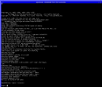</a>
&nbsp;&nbsp;&nbsp;
<a href="openbsd-pmax-20040710.png">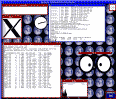</a>

<p>
OpenBSD/pmax died at release 2.8 of OpenBSD, so you should be
aware of the fact that this will not give you an up-to-date OpenBSD
system.

<p>
Following these instructions <i>might</i> work. If not, then use
common sense and imagination to modify them as you see fit.

<p>
<ol>
  <li>Create an empty harddisk image, which will be the root disk
	that OpenBSD installs itself onto:<pre>
	<b>dd if=/dev/zero of=obsd_pmax.img bs=1 count=512 seek=900000000</b>

</pre>
  <li>Download the entire pmax directory from the ftp server: (approx. 99 MB)<pre>
	<b>wget -r <a href="ftp://ftp.se.openbsd.org/pub/OpenBSD/2.8/pmax/">ftp://ftp.se.openbsd.org/pub/OpenBSD/2.8/pmax/</a></b>

</pre>

  <li>Execute the following commands:
<p><table border="0"><tr><td><tt>&nbsp;&nbsp;&nbsp;&nbsp;&nbsp;&nbsp;&nbsp;</tt></td><td><pre>
<b>mv ftp.se.openbsd.org/pub/OpenBSD/2.8/pmax/simpleroot28.fs.gz .
gunzip simpleroot28.fs.gz
chmod +w simpleroot28.fs</b>		&lt;--- make sure
</pre></td></tr></table>
  <li>You now need to make an ISO image of the entire directory you downloaded.
	(I recommend using <tt>mkisofs</tt> for that purpose. If you don't
	already have <tt>mkisofs</tt> installed on your system, you need
	to install it in order to do this.)<pre>
	<b>mkisofs -o openbsd_pmax_2.8.iso ftp.se.openbsd.org/pub/OpenBSD/2.8/pmax</b>
	<b>rm -rf ftp.se.openbsd.org</b>      <i>(this directory is not needed anymore)</i>

</pre>
  <li>Start the emulator with all three (!) disk images:<pre>
	<b>gxemul -e 3max -d obsd_pmax.img -d b:simpleroot28.fs -j bsd -d c:openbsd_pmax_2.8.iso</b>

</pre>
	(If you add <tt>-X</tt>, you will run with the graphical
	framebuffer. This is <i>REALLY</i> slow because the console has to
	scroll a lot during the install. I don't recommend it.)
  <p>
  <li>Go on with the installation as you would do if you were installing on a real machine.
	If you are not used to the OpenBSD installer, then this will most likely
	be a very uncomfortable experience. Some important things to keep in mind are:
	<ul>
	  <li>rz0 is the rootdisk you wish to install onto.
	  <li>rz1 is the simpleroot image.
	  <li>rz2 is the CDROM containing the "install sets".
	  <li>When asked for the "<b>root device?</b>", enter <b>rz1</b>.
	  <li>At "<b>Enter pathname of shell or RETURN for sh:</b>", press enter.
	  <li>At the # prompt, do the following:<pre>
	<b>fsck /dev/rz1a</b>        (and mark the filesystem as clean)
	<b>mount /dev/rz1a /</b>
	<b>mkdir /kern</b>
	<b>mkdir /mnt2</b>
	<b>mount -t kernfs kern kern</b>
	<b>./install</b>

</pre>
		and proceed with the install. Good luck. :-)
	  <li>Answer "<b>y</b>" when asked if you wish to configure the network.
		(See the section about installing NetBSD/pmax for suitable
		network settings.)
	  <li>Install from "<b>c</b>" (cdrom), choose "<b>rz2</b>" as the cdrom device, and "<b>/</b>" as
		the directory containing the install sets.
	</ul>
  <p>
  <li>For some unknown reason, the install script does not set the root
	password! The first time you boot up OpenBSD after the install, you
	need to go into single user mode and run <b>passwd root</b> to set
	the root password, or you will not be able to log in at all!<pre>
	<b>gxemul -e 3max -d obsd_pmax.img -d 2c:openbsd_pmax_2.8.iso -j bsd -o '-s'</b>
</pre>
While you are at it, you might want to extract the X11 install sets
as well, as the installer seems to ignore them too. (Perhaps due to a bug
in the installer, perhaps because of the way I used mkisofs.)
<p>
Execute the following commands in the emulator:
<p><table border="0"><tr><td><tt>&nbsp;&nbsp;&nbsp;&nbsp;&nbsp;&nbsp;&nbsp;</tt></td><td><pre>
<b>fsck /dev/rz0a
mount /
passwd root

cd /; mount -t cd9660 /dev/rz2c /mnt; sh
for a in /mnt/[xX]*; do tar zxvf $a; done
ln -s /usr/X11R6/bin/Xcfbpmax /usr/X11R6/bin/X
ln -s /dev/fb0 /dev/mouse
echo /usr/X11R6/lib &gt;&gt; /etc/ld.so.conf
ldconfig

sync
halt</b>
</pre></td></tr></table>
</ol>

<p>
NOTE: It is also possible to install via ftp instead of using a CDROM image. 
This is not much less awkward, you still need the simpleroot filesystem 
image, and you still have to manually add the X11 install sets and set the 
root password, and so on.

<p>
Once you have completed the installation procedure, the following command
will let you boot from the new rootdisk image:
<pre>
	<b>gxemul -e 3max -X -o '-aN' -d obsd_pmax.img -j bsd</b>
</pre>

<p>
(Normally, you would be asked about which root device to use (<tt>rz0</tt>),
but using <b><tt>-o '-aN'</tt></b> supresses that.)

<p>
When asked for which terminal type to use, when logging in as root,
enter <b><tt>rcons</tt></b> if you are using the graphical framebuffer,
<b><tt>vt100</tt></b> for text-mode.
<br>Use <b><tt>startx</tt></b> to start X windows.


<p><br>
<a name="openbsdcatsinstall"></a>
<h3>OpenBSD/cats:</h3>

<p>[Note: This is a <a href="#legacy"><font color="#dd2222"><b>LEGACY MODE</b></font></a>.]

<p>It is possible to install and run
<a href="http://www.openbsd.org/cats.html">OpenBSD/cats</a>
in GXemul. Unfortunately, "The OpenBSD/cats port has been discontinued 
after the 4.0 release." according to
<a href="http://www.openbsd.org/cats.html">http://www.openbsd.org/cats.html</a>,
but 4.0 should run fine.

<p>&nbsp;&nbsp;&nbsp;&nbsp;&nbsp;&nbsp;&nbsp;&nbsp;
<a href="20051007-openbsd-cats-installed.png">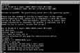</a>

<p>To install OpenBSD/cats onto an emulated harddisk image,
follow these instructions:

<p>
<ol>
  <li>Create an empty harddisk image, which will be the root disk
	that OpenBSD installs itself onto:<pre>
	<b>dd if=/dev/zero of=obsd_cats.img bs=1024 count=1 seek=1900000</b>

</pre>
  <li>Download the entire cats directory from the ftp server:<pre>
	<b>wget -np -l 0 -r <a href="ftp://ftp.se.openbsd.org/pub/OpenBSD/4.0/cats/">ftp://ftp.se.openbsd.org/pub/OpenBSD/4.0/cats/</a></b>
	<b>cp ftp.se.openbsd.org/pub/OpenBSD/4.0/cats/bsd .</b>
	<b>cp ftp.se.openbsd.org/pub/OpenBSD/4.0/cats/bsd.rd .</b>

</pre>
	(Replace ftp.se.openbsd.org with a server closer to you, for
	increased download speed.)
  <p>
  <li>You now need to make an ISO image of the entire directory you downloaded.
	(I recommend using <tt>mkisofs</tt> for that purpose. If you don't
	already have <tt>mkisofs</tt> installed on your system, you need
	to install it in order to do this.)<pre>
	<b>mkisofs -allow-lowercase -o openbsd_cats_4.0.iso ftp.se.openbsd.org/pub/OpenBSD/</b>
	<b>rm -rf ftp.se.openbsd.org</b>      <i>(this directory is not needed anymore)</i>

</pre>
  <li>Start the emulator using this command line:<pre>
	<b>gxemul -XEcats -d obsd_cats.img -d openbsd_cats_4.0.iso bsd.rd</b>

</pre>
	and proceed like you would do if you were installing OpenBSD
	on a real CATS. (Install onto <tt>wd0</tt>, don't configure the
	network, install from CD.)
</ol>

<p>(Although it <i>is</i> possible to configure the network, IPv4 address 
10.0.0.1, netmask 255.0.0.0, gateway/default route 10.0.0.254, and 
nameserver 10.0.0.254, the userland NAT-like networking layer is not 
stable enough yet to support a full install via ftp.)

<p><b>NOTE:</b> Make sure that you <tt>sync</tt> and <tt>reboot</tt>
correctly once the installation is finished, or the <tt>/dev</tt> nodes 
may not have been written correctly to disk.

<p>Once the install has finished, the following command should let you 
boot from the harddisk image:

<p><pre>
	<b>gxemul -XEcats -d obsd_cats.img bsd</b>

</pre>


<p><br>
<a name="openbsdlandiskinstall"></a>
<h3>OpenBSD/landisk:</h3>

<p>[Note: This is a <a href="#legacy"><font color="#dd2222"><b>LEGACY MODE</b></font></a>.]

<p>It is possible to install and run
<a href="http://www.openbsd.org/landisk.html">OpenBSD/landisk</a>
in GXemul.

<p>&nbsp;&nbsp;&nbsp;&nbsp;&nbsp;&nbsp;&nbsp;&nbsp;
<a href="20081103-openbsd-landisk.png"></a>

<p>To install OpenBSD/landisk onto an emulated harddisk image,
follow these instructions:

<p>
<ol>
  <li>Create an empty harddisk image, which will be the root disk
	that OpenBSD installs itself onto:<pre>
	<b>dd if=/dev/zero of=obsd_landisk.img bs=1024 count=1 seek=2000000</b>

</pre>
  <li>Download the entire landisk directory from the ftp server:<pre>
	<b>wget -np -l 0 -r <a href="ftp://ftp.se.openbsd.org/pub/OpenBSD/4.6/landisk/">ftp://ftp.se.openbsd.org/pub/OpenBSD/4.6/landisk/</a></b>
	<b>cp ftp.se.openbsd.org/pub/OpenBSD/4.6/landisk/bsd .</b>
	<b>cp ftp.se.openbsd.org/pub/OpenBSD/4.6/landisk/bsd.rd .</b>

</pre>
	(Replace ftp.se.openbsd.org with a server closer to you, for
	increased download speed.)
  <p>
  <li>You now need to make an ISO image of the entire directory you downloaded.
	(I recommend using <tt>mkisofs</tt> for that purpose. If you don't
	already have <tt>mkisofs</tt> installed on your system, you need
	to install it in order to do this.)<pre>
	<b>mkisofs -U -o openbsd_landisk_4.6.iso ftp.se.openbsd.org/pub/OpenBSD/</b>
	<b>rm -rf ftp.se.openbsd.org</b>      <i>(this directory is not needed anymore)</i>

</pre>
  <li>Start the emulator using this command line:<pre>
	<b>gxemul -x -E landisk -d obsd_landisk.img -d d:openbsd_landisk_4.6.iso bsd.rd</b>

</pre>
	and proceed like you would do if you were installing OpenBSD
	on a real landisk. The following hints are useful to get you
	through the installation:
	<ul>
	  <li>Terminal type = <b>xterm</b>
	  <li>root disk = <b>wd0</b> (the disk to install onto)
	  <li>Use the entire disk for OpenBSD (<b>whole</b>)
	  <li>Accept the auto-layout (one big root partition (a) and a
	  	small swap partition (b). c is the entire disk).
	  <li>Do <b>not</b> configure the network. (The Realtek NIC
		found in the Landisk machine is not implemented yet
		in the emulator.)
	  <li>Location of sets = <b>disk</b>
	  <li>Is the disk partition already mounted = <b>no</b>
	  <li>Disk containing the install media = <b>wd1</b>
	  <li>Pathname to the sets = <b>4.6/landisk</b>
	</ul>
</ol>

<p>Once the install has finished, the following command should let you 
boot from the disk image:

<p><pre>
	<b>gxemul -x -E landisk -d obsd_landisk.img bsd</b>

</pre>

<p>As with most emulation modes in GXemul, the NIC in this machine is 
not emulated yet. If you want to transfer files to/from the emulated 
landisk machine, see 
<a href="misc.html#filexfer">this chapter</a> in the documentation.


<p><br>
<a name="openbsdmvme88kinstall"></a>
<h3>OpenBSD/mvme88k:</h3>

<p>[Note: This is a <a href="#legacy"><font color="#dd2222"><b>LEGACY MODE</b></font></a>.]

<p>It is possible to run <a href="http://www.openbsd.org/mvme88k.html">OpenBSD/mvme88k</a>
on an emulated Motorola MVME187 machine in the emulator.

<p>To install OpenBSD/mvme88k onto an emulated harddisk image, follow these
instructions:

<p>
<ol>
  <li>Create an empty harddisk image, which will be the root disk
	that OpenBSD installs itself onto:<pre>
	<b>dd if=/dev/zero of=obsd_mvme88k.img bs=1024 count=1 seek=1900000</b>

</pre>
  <li>Download the entire mvme88k directory from the ftp server:<pre>
	<b>wget -np -l 0 -r <a href="ftp://ftp.se.openbsd.org/pub/OpenBSD/4.5/mvme88k/">ftp://ftp.se.openbsd.org/pub/OpenBSD/4.5/mvme88k/</a></b>

</pre>

  <li>You now need to make an ISO image of the entire directory you downloaded.
	(I recommend using <tt>mkisofs</tt> for that purpose. If you don't
	already have <tt>mkisofs</tt> installed on your system, you need
	to install it in order to do this.)<pre>
	<b>mkisofs -o openbsd_mvme88k_4.5.iso -U ftp.se.openbsd.org/pub/OpenBSD/</b>

</pre>
  <li>Copy away the kernel, we'll need it later. But remove the rest of the
	downloaded tree.<pre>
	<b>cp ftp.se.openbsd.org/pub/OpenBSD/4.5/mvme88k/bsd .
	rm -rf ftp.se.openbsd.org</b>
</pre>

  <li>Start the emulator using this command line:<pre>
	<b>gxemul -e mvme187 -d obsd_mvme88k.img -d b:openbsd_mvme88k_4.5.iso -j 4.5/mvme88k/bsd.rd</b>

</pre>
	and proceed like you would do if you were installing OpenBSD
	on a real MVME187. There is a problem with finding the filesystem on
	the CDROM, since there is no disklabel [and/or because the emulator
	perhaps does not simulate CDROM TOCs well enough], but it's possible
	to mount
	the filesystem using manual intervention. Here is an example (from 4.4) of what
	an install can look like: (user input in <font color="#0000ff"><i>blue italic</i></font>)<pre>
	CPU0 is associated to 2 MC88200 CMMUs
	Copyright (c) 1982, 1986, 1989, 1991, 1993
		The Regents of the University of California.  All rights reserved.
	Copyright (c) 1995-2008 OpenBSD. All rights reserved.  http://www.OpenBSD.org

	OpenBSD 4.4 (RAMDISK) #19: Sun Aug 10 21:03:44 GMT 2008
	    root@arzon.gentiane.org:/usr/src/sys/arch/mvme88k/compile/RAMDISK
	real mem = 67108864 (64MB)
	avail mem = 56791040 (54MB)
	mainbus0 at root: Motorola MVME187, 33MHz
	cpu0: M88100 rev 0x3, 2 CMMU
	cpu0: M88200 (16K) rev 0x9, full Icache, M88200 (16K) rev 0x9, full Dcache
	pcctwo0 at mainbus0 addr 0xfff00000: rev 0
	nvram0 at pcctwo0 offset 0xc0000: MK48T08
	cl0 at pcctwo0 offset 0x45000 ipl 3: console
	osiop0 at pcctwo0 offset 0x47000 ipl 2: NCR53C710 rev 2, 66MHz
	scsibus0 at osiop0: 8 targets, initiator 7
	osiop0: target 0 ignored sync request
	osiop0: target 0 now using 8 bit asynch xfers
	sd0 at scsibus0 targ 0 lun 0: <GXemul, obsd_mvme88k.im, 0> SCSI2 0/direct fixed
	sd0: 1855MB, 1855 cyl, 16 head, 128 sec, 512 bytes/sec, 3800003 sec total
	osiop0: target 1 ignored sync request
	osiop0: target 1 now using 8 bit asynch xfers
	cd0 at scsibus0 targ 1 lun 0: <GXemul, openbsd_mvme88k, 0> SCSI2 5/cdrom removable
	vme0 at pcctwo0 offset 0x40000
	vme0: using BUG parameters
	vme0: vme to cpu irq level 1:1
	vmes0 at vme0
	rd0: fixed, 4096 blocks
	boot device: <unknown>
	root on rd0a swap on rd0b dump on rd0b
	WARNING: clock gained 138 days -- CHECK AND RESET THE DATE!
	erase ^?, werase ^W, kill ^U, intr ^C, status ^T
	(I)nstall, (U)pgrade or (S)hell? <font color="#0000ff"><i>i</i></font>

	Welcome to the OpenBSD/mvme88k 4.4 install program.

	This program will help you install OpenBSD. At any prompt except password
	prompts you can escape to a shell by typing '!'. Default answers are shown
	in []'s and are selected by pressing RETURN.  At any time you can exit this
	program by pressing Control-C, but exiting during an install can leave your
	system in an inconsistent state.

	Terminal type? [vt100] <font color="#0000ff"><i>xterm</i></font>

	IS YOUR DATA BACKED UP? As with anything that modifies disk contents, this
	program can cause SIGNIFICANT data loss.

	It is often helpful to have the installation notes handy. For complex disk
	configurations, relevant disk hardware manuals and a calculator are useful.

	Proceed with install? [no] <font color="#0000ff"><i>yes</i></font>
	Cool! Let's get to it.

	You will now initialize the disk(s) that OpenBSD will use. To enable all
	available security features you should configure the disk(s) to allow the
	creation of separate filesystems for /, /tmp, /var, /usr, and /home.

	Available disks are: sd0.
	Which one is the root disk? (or 'done') [sd0] <font color="#0000ff"><i>sd0</i></font>
	osiop0: target 0 ignored sync request
	osiop0: target 0 now using 8 bit asynch xfers
	Initial label editor (enter '?' for help at any prompt)
	> <font color="#0000ff"><i>a a</i></font>
	offset: [0] <font color="#0000ff"><i>63</i></font>
	size: [3799940] <font color="#0000ff"><i>3500000</i></font>
	FS type: [4.2BSD] 
	mount point: [none] <font color="#0000ff"><i>/</i></font>
	> <font color="#0000ff"><i>a b</i></font>
	offset: [3500063] 
	size: [299940] 
	FS type: [swap] 
	> <font color="#0000ff"><i>w</i></font>
	> <font color="#0000ff"><i>q</i></font>
	No label changes.
	No more disks to initialize.

	OpenBSD filesystems:
	sd0a /

	The next step *DESTROYS* all existing data on these partitions!
	Are you really sure that you're ready to proceed? [no] <font color="#0000ff"><i>yes</i></font>
	/dev/rsd0a: 1709.0MB in 3500000 sectors of 512 bytes
	9 cylinder groups of 202.47MB, 12958 blocks, 25984 inodes each
	/dev/sd0a on /mnt type ffs (rw, asynchronous, local, ctime=Thu Jan  1 16:29:57 2009)

	System hostname? (short form, e.g. 'foo') <font color="#0000ff"><i>test</i></font>
	Configure the network? [yes] <font color="#0000ff"><i>no</i></font>
	Password for root account? (will not echo) 
	Password for root account? (again) 

	Let's install the sets!
	Location of sets? (cd disk ftp http nfs or 'done') [cd] <font color="#0000ff"><i>disk</i></font>
	Is the disk partition already mounted? [no] <font color="#0000ff"><i>!mount -t cd9660 /dev/cd0c /mnt2</i></font>
	osiop0: target 1 ignored sync request
	osiop0: target 1 now using 8 bit asynch xfers
	Is the disk partition already mounted? [no] <font color="#0000ff"><i>yes</i></font>
	Pathname to the sets? (or 'done') [4.4/mvme88k] <font color="#0000ff"><i>/mnt2/4.4/mvme88k</i></font>

	Select sets by entering a set name, a file name pattern or 'all'. De-select
	sets by prepending a '-' to the set name, file name pattern or 'all'. Selected
	sets are labelled '[X]'.

	        [X] bsd
	        [X] bsd.rd
	        [ ] bsd.mp
	        [X] base44.tgz
	        [X] etc44.tgz
	        [X] misc44.tgz
	        [X] comp44.tgz
	        [X] man44.tgz
	        [X] game44.tgz
	        [ ] xbase44.tgz
	        [ ] xetc44.tgz
	        [ ] xshare44.tgz
	        [ ] xfont44.tgz
	        [ ] xserv44.tgz
	Set name? (or 'done') [bsd.mp] <font color="#0000ff"><i>done</i></font>
	Ready to install sets? [yes] <font color="#0000ff"><i>yes</i></font>
	Getting bsd ...
	100% |**************************************************|  2329 KB    01:21    
	Getting bsd.rd ...
	100% |**************************************************|  3150 KB    01:48    
	Getting base44.tgz ...
	100% |**************************************************| 87686 KB    11:56    
	Getting etc44.tgz ...
	100% |**************************************************|   629 KB    00:14    
	Getting misc44.tgz ...
	100% |**************************************************|  2866 KB    00:37    
	Getting comp44.tgz ...
	100% |**************************************************| 38869 KB    06:19    
	Getting man44.tgz ...
	100% |**************************************************|  6967 KB    01:50    
	Getting game44.tgz ...
	100% |**************************************************|  7037 KB    01:16    
	Location of sets? (cd disk ftp http nfs or 'done') [done] <font color="#0000ff"><i>done</i></font>
	Start sshd(8) by default? [yes] <font color="#0000ff"><i>yes</i></font>
	Start ntpd(8) by default? [no] <font color="#0000ff"><i>no</i></font>
	Saving configuration files...done.
	Generating initial host.random file...done.
	What timezone are you in? ('?' for list) [Canada/Mountain] <font color="#0000ff"><i>Europe/Stockholm</i></font>
	Setting local timezone to 'Europe/Stockholm'...done.
	Making all device nodes...done.
	Installing boot block...
	boot: /mnt/boot
	proto: /mnt/usr/mdec/bootxx
	device: /dev/rsd0a
	cdevice: /dev/rsd0c
	modifying vid.
	/mnt/usr/mdec/bootxx: entry point 0x9f0000
	proto bootblock size 5120
	room for 64 filesystem blocks at 0x9f1198
	Will load 2 blocks of size 16384 each.
	0: 17696
	1: 17728

	CONGRATULATIONS! Your OpenBSD install has been successfully completed!
	To boot the new system, enter halt at the command prompt. Once the
	system has halted, reset the machine and boot from the disk.
	# <font color="#0000ff"><i>umount /mnt</i></font>
	# <font color="#0000ff"><i>halt</i></font>

</pre>
</ol>

<p>
Once the install has finished, the following command should let you 
boot from the harddisk image:
<pre>
	<b>gxemul -e mvme187 -d obsd_mvme88k.img bsd</b>
</pre>

<p>When asked about root disk, enter <tt><b>sd0</b></tt>.

<p>No NIC has been implemented yet for mvme187, so there is no network connectivity
from within the guest OS.


<p><br>
<a name="helenos"></a>
<h3>HelenOS:</h3>

<p>[Note: This is a <a href="#legacy"><font color="#dd2222"><b>LEGACY MODE</b></font></a>.]

<p><a href="http://www.helenos.org/">HelenOS</a> can run in GXemul's
<tt>testarm</tt> and <tt>oldtestmips</tt> machine modes.

<p>To run HelenOS for ARM in GXemul:
<ol>
  <li>Download the HelenOS kernel:<pre>
	<a href="http://www.helenos.org/releases/HelenOS-0.4.0-arm32-gxemul.boot">http://www.helenos.org/releases/HelenOS-0.4.0-arm32-gxemul.boot</a>
  </pre>
  <li>Start GXemul using the following command line:<pre>
  	<b>gxemul -X -E testarm HelenOS-0.4.0-arm32-gxemul.boot</b>
  </pre>
</ol>

<p>To run HelenOS for MIPS in GXemul:
<ol>
  <li>Download the HelenOS kernel:<pre>
	<a href="http://www.helenos.org/releases/HelenOS-0.4.0-mips32-gxemul.boot">http://www.helenos.org/releases/HelenOS-0.4.0-mips32-gxemul.boot</a>
  </pre>
  <li>Start GXemul using the following command line:<pre>
  	<b>gxemul -X -E oldtestmips -C 5Kc HelenOS-0.4.0-mips32-gxemul.boot</b>
  </pre>
	(Note the <tt>-C 5Kc</tt> option. HelenOS depends on the fact that
	the MIPS rdhwr instruction should trigger an 'invalid opcode'
	exception, and the default oldtestmips CPU (5KE) does not treat this
	as an invalid opcode. It is valid, but not yet implemented.)
</ol>

<p>Once the kernel has booted, you can press e.g. F3 to get to the
command line shell, or F12 + Enter to enter the kernel console.


<p><br>
<a name="ultrixinstall"></a>
<h3>Ultrix/RISC:</h3>

<p>[Note: This is a <a href="#legacy"><font color="#dd2222"><b>LEGACY MODE</b></font></a>.]

<p>Ultrix 4.x can run in GXemul on an emulated DECstation 5000/200.
(Ultrix was the native OS for these machines, but
<a href="#netbsdpmaxinstall">NetBSD/pmax</a> is also usable.)

<p>
&nbsp;&nbsp;&nbsp;&nbsp;&nbsp;&nbsp;&nbsp;&nbsp;
<a href="20040504-ultrix45-boot1.png">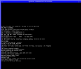</a>
&nbsp;&nbsp;&nbsp;
<a href="ultrix4.5-20040706.png">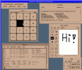</a>

<p>
The following instructions should let you install Ultrix onto a disk image:

<ol>
  <li>Create an empty harddisk image, which will be the root disk
        that Ultrix installs itself onto:<pre>
        <b>dd if=/dev/zero of=rootdisk.img bs=1024 count=1 seek=800000</b>

</pre>
  <li>Place your Ultrix installation media in your CDROM drive.
	(On FreeBSD and similar systems, it is called <tt>/dev/cd0c</tt>.
	Replace that with the name of your CDROM drive, or the name of a
	.iso image file.) Then, start the emulator like this:<pre>
        <b>gxemul -X -e 3max -d rootdisk.img -d bc:/dev/cd0c -j vmunix</b>

</pre>
  <li>Once the first stage of the installation is done (restoring the root
	filesystem), you need to restart the emulator, booting from the 
	new rootdisk, to continue the installation process.
	This is done by removing the bootflag ('<tt>b</tt>') from the second
	diskimage argument:<pre>
        <b>gxemul -X -e 3max -d rootdisk.img -d c:/dev/cd0c -j vmunix</b>

</pre>
</ol>

<p>
When the installation is completed, the following command should start  
Ultrix from the harddisk image:<pre>
        <b>gxemul -X -e 3max -j vmunix -d rootdisk.img</b>
</pre>

<p>If you have a very fast host machine, you might experience a weird
timer related bug, which makes it impossible to logon to the system. It is
triggered when the emulation goes faster than any real DECstation machine
was capable of running. A temporary workaround is to add
<b><tt>-I33000000</tt></b> to fix the emulated clock speed to 33 million
instructions per emulated second.

<p>If the workaround above doesn't work, you can also start up other 
processes on the host, apart from the emulator, so that the emulator runs 
more slowly. This is an ugly workaround, but seems to work. Once you have 
logged in into Ultrix, you can kill the extra processes.

<p>You can experiment with adding <b><tt>-Z2</tt></b> (for emulating a 
dual-headed workstation) or even <b><tt>-Z3</tt></b> (tripple-headed), and 
also the <b><tt>-Y2</tt></b> option for scaling down the framebuffer 
windows by a factor 2x2.
There is also a <b><tt>-z</tt></b> option for supplying names of X11 
displays to use. The following example starts Ultrix on an emulated
tripple-headed workstation, on three different displays (<tt>remote1:0.0</tt>,
<tt>localhost:0.0</tt>, and <tt>remote2:0.0</tt>), using no scaledown:<pre>
        <b>gxemul -N -e 3max -jgenvmunix -d rootdisk.img \
            -XZ3 -z remote1:0.0 -z localhost:0.0 -z remote2:0.0</b>
</pre>

<p>The photo below shows a single Ultrix session running tripple-headed in
GXemul on an Alpha 21164PC, with displays on a Sun Ultra1 (to the left),
on the Alpha itself (in the middle), and on an HP700/RX X-terminal (8-bit
color depth, running off the Alpha) to the right.

<p>&nbsp;&nbsp;&nbsp;&nbsp;&nbsp;&nbsp;&nbsp;&nbsp;
<a href="20041209-ultrix-tripplehead.jpg"></a>

<p>The X11 displays may differ in bit depth and endianness. Unfortunately, 
there is no way yet to set the scaledown factor on a per-window basis, so 
the scaledown factor affects all windows.

<p>(If you didn't use <tt><b>-Z<i>n</i></b></tt> during the installation, and 
compiled your own <tt>/vmunix</tt>, then it will not contain support for 
multiple graphics cards. To overcome this problem, use the generic kernel,
<tt><b>-j genvmunix</b></tt>, whenever you are running the emulator with a 
different setup than the one you used when Ultrix was installed.)

<p>A note for the historically interested: OSF/1 for MIPS was quite similar
to Ultrix, so that is possible to run as well.  If you are unsuccessful
in installing Ultrix or OSF/1 directly in the emulator, you can always
install it on your real machine onto a real SCSI disk, and then copy the
contents of that SCSI disk into a file (using <b><tt>dd(1)</tt></b>), and use
that file as a disk image file in the emulator.


<p><br>
<a name="sprite"></a>
<h3>Sprite for DECstation:</h3>

<p>[Note: This is a <a href="#legacy"><font color="#dd2222"><b>LEGACY MODE</b></font></a>.]

<p>Sprite was a research operating system at the University of Berkeley.
A copy of a Sprite harddisk image for a DECstation 5000/200 is still
available. If you want to find out more about Sprite in general, read
<a href="http://www.cs.berkeley.edu/projects/sprite/retrospective.html">
http://www.cs.berkeley.edu/projects/sprite/retrospective.html</a>.

<p>
&nbsp;&nbsp;&nbsp;&nbsp;&nbsp;&nbsp;&nbsp;&nbsp;
<a href="20040711-sprite-1.png">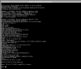</a>
&nbsp;&nbsp;&nbsp;
<a href="sprite-20040711.png">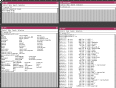</a>

<p>
The following instructions should let you run Sprite in the emulator:

<p>
<ol>
  <li>Download the Sprite harddisk image:<pre>
	<a href="ftp://ftp.es.embnet.org/pub/misc/os/cluster/Sprite/">ftp://ftp.es.embnet.org/pub/misc/os/cluster/Sprite</a>/<a href="ftp://ftp.es.embnet.org/pub/misc/os/cluster/Sprite/ds5000.bt">ds5000.bt</a>
	83973120 bytes, MD5 = ec84eeeb20fe77b758370d5e312e4a5e
</pre>
  <p>(A big thank you to José R. Valverde for maintaining the OS archives
  	at ftp.embnet.org.)
  <li>Start the emulator with the following command line:<pre>
	<b>gxemul -X -e 3max -M128 -d ds5000.bt -j vmsprite -o ''</b>

</pre>
</ol>

<p>The first time you boot up with the disk image, you will be asked a number 
of questions regarding network settings. If you feel like entering correct 
values, then you should use the following:

<p><pre>
    Your machine's Ethernet address:    10:20:30:00:00:10
    Your machine's IP:                  10.0.0.1
    Subnet mask:                        0xff000000
    Gateway's Ethernet address:         60:50:40:30:20:10
    Gateway's IP:                       10.0.0.254
</pre>

<p>
Unfortunately, at the end of <a href="ftp://ftp.es.embnet.org/pub/misc/os/cluster/Sprite/boot.txt">ftp://ftp.es.embnet.org/pub/misc/os/cluster/Sprite/boot.txt</a>,
the following sad statement can be found:
<pre>
    The bootable Sprite image is meant to be a demonstration of Sprite, not
    a robust Sprite system.  There are several missing things, such as 
    floating point and network support.
</pre>

<p>Once you are logged in as root, running <b><tt>xinit</tt></b> will
start the X11 environment.


<p><br>
<a name="declinux"></a>
<h3>Debian GNU/Linux for DECstation:</h3>

<p>[Note: This is a <a href="#legacy"><font color="#dd2222"><b>LEGACY MODE</b></font></a>.]

<p>It is possible to run Debian GNU/Linux for DECstation in the emulator,
on an emulated 5000/200 ("3max"). However, just choosing any 
Linux/DECstation kernel at random for the installation will not work.

<p><ul>
  <li>Linux 2.4/DECstation DZ serial console output doesn't work too well in
	GXemul. Linux oopses randomly, which may be due to bugs in GXemul,
	but may also be due to bugs in the serial controller code in Linux.
	(The speed at which serial interrupts are generated can be
	lowered with the <tt>-U</tt> command line option, but it only
	reduces the risk, it doesn't take away the oopses completely.)
  <li>The Linux 2.6/DECstation DZ serial console driver doesn't work at 
	all in the emulator, and I'm not really sure it would work on a
	real 5000/200 either. Hopefully this will be fixed in Linux in
	the future.
  <li>To get around the serial console problem, the obvious solution is to
	use a graphical framebuffer instead. Old Debian install kernels
	supported the graphical framebuffer on the 3max, but not the
	keyboard. (This has been fixed now, it seems.)
  <li>For quite some time, the MIPS linux cvs tree has had support for the
	framebuffer and keyboard, but it did not include Debian's
	patches for networking, which made it unusable for network
	installs. (Possibly fixed now.)
  <li>The kernel has to be for 5000/200. This rules out using
	the default kernel on netinst ISO images provided by Debian.
	These ISO images boot directly into a kernel which is meant
	for a different DECstation model.
  <li>The kernel has to have an initrd which more or less matches the
	version of Debian that will be installed.
</ul>

<p>Luckily, a precompiled install kernel has been made available by David 
Muse, for Debian for R3000 DECstations, which has support for framebuffer, 
keyboard, and networking, which works pretty well. Thanks David. :-)

<p>The following steps should let you install Debian GNU/Linux for 
DECstation onto a harddisk image in the emulator:

<p>
<ol>
  <li>Create an empty harddisk image, which will be the root disk
	that Debian installs itself onto:<pre>
	<b>dd if=/dev/zero of=debian_pmax.img bs=1024 count=1 seek=6000000</b>

</pre>
  <li>Download David Muse' install kernel, and a Debian Netinstall CD-ROM:<pre>
	<a href="http://www.firstworks.com/mips-linux-2.4.31/vmlinux-2.4.31">http://www.firstworks.com/mips-linux-2.4.31/vmlinux-2.4.31</a>
	<a href="http://cdimage.debian.org/cdimage/archive/3.1_r6a/mipsel/iso-cd/">http://cdimage.debian.org/cdimage/archive/3.1_r6a/mipsel/iso-cd</a>/<a href="http://cdimage.debian.org/cdimage/archive/3.1_r6a/mipsel/iso-cd/debian-31r6a-mipsel-netinst.iso">debian-31r6a-mipsel-netinst.iso</a>

	MD5 (vmlinux-2.4.31) = c88dc0a26b91e3646698179c18e8169b
	MD5 (debian-31r6a-mipsel-netinst.iso) = db1bf2f8e5b24f820f37034ec1d20bdc
</pre>
  <p>
  <li>Start the installation like this:<pre>
	<b>gxemul -X -e3max -d debian_pmax.img -d debian-31r6a-mipsel-netinst.iso vmlinux-2.4.31</b>
</pre>

	<p>If everything goes well, you will see Linux' boot messages, and then
	arrive at the language chooser.

<p>
&nbsp;&nbsp;&nbsp;&nbsp;&nbsp;&nbsp;&nbsp;&nbsp;<a href="debian-1.png">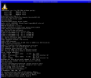</a>
&nbsp;&nbsp;&nbsp;&nbsp;&nbsp;&nbsp;&nbsp;&nbsp;<a href="debian-2.png">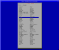</a>
&nbsp;&nbsp;&nbsp;&nbsp;&nbsp;&nbsp;&nbsp;&nbsp;<a href="debian-3.png">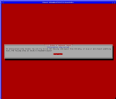</a>
&nbsp;&nbsp;&nbsp;&nbsp;&nbsp;&nbsp;&nbsp;&nbsp;<a href="debian-4.png">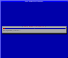</a>

	<p>There will be a warning about the keyboard
	layout. Don't mind this. Continue, and then select <b>Detect
	and mount CD-ROM</b> in the next menu.

<p>
&nbsp;&nbsp;&nbsp;&nbsp;&nbsp;&nbsp;&nbsp;&nbsp;<a href="debian-5.png">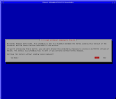</a>
&nbsp;&nbsp;&nbsp;&nbsp;&nbsp;&nbsp;&nbsp;&nbsp;<a href="debian-6.png">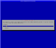</a>
&nbsp;&nbsp;&nbsp;&nbsp;&nbsp;&nbsp;&nbsp;&nbsp;<a href="debian-7.png">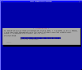</a>
&nbsp;&nbsp;&nbsp;&nbsp;&nbsp;&nbsp;&nbsp;&nbsp;<a href="debian-8.png"></a>

	<p>
	There will also be a warning about lack of loadable modules. Don't
	mind this either, continue anyway by choosing <b>Yes</b>.
	<p>
	When you reach the network configuration part of the install, choose
	<b>Configure network manually</b> and enter the following values:<pre>
	IP address:                 <b>10.0.0.1</b>
	Netmask:                    <b>255.0.0.0</b>
	Gateway:                    <b>10.0.0.254</b>
	Name server addresses:      <b>10.0.0.254</b>

</pre>
	<p>Choose <b>Erase entire disk</b> in the partitioner.

	<p>Wait for the base system to be installed. This takes almost forever,
	so you can go fetch several <a href="http://en.wikipedia.org/wiki/Jolt_Cola">Jolts</a>
	or cups of coffee in the meanwhile.

<p>
&nbsp;&nbsp;&nbsp;&nbsp;&nbsp;&nbsp;&nbsp;&nbsp;<a href="debian-9.png">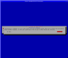</a>
&nbsp;&nbsp;&nbsp;&nbsp;&nbsp;&nbsp;&nbsp;&nbsp;<a href="debian-10.png">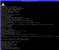</a>
&nbsp;&nbsp;&nbsp;&nbsp;&nbsp;&nbsp;&nbsp;&nbsp;<a href="debian-11.png">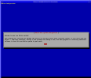</a>
&nbsp;&nbsp;&nbsp;&nbsp;&nbsp;&nbsp;&nbsp;&nbsp;<a href="debian-12.png">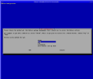</a>

	<p>Congratulations! The first phase of the installation is now completed.
	Reboot using the following command line:<pre>
	<b>gxemul -X -e3max -o 'root=/dev/sda1' -d debian_pmax.img vmlinux-2.4.31</b>

</pre>
	<p>The post-install step takes quite some time as well. A perfect opportunity
	for more coffee.

	<p>When asked about whether the hardware clock is set to GMT or
	not, answer Yes.

	<p>When asked about "Apt configuration", choose <b>http</b> as the method
	to use for accessing the Debian archive.

<p>
&nbsp;&nbsp;&nbsp;&nbsp;&nbsp;&nbsp;&nbsp;&nbsp;<a href="debian-13.png">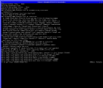</a>
&nbsp;&nbsp;&nbsp;&nbsp;&nbsp;&nbsp;&nbsp;&nbsp;<a href="debian-14.png"></a>
&nbsp;&nbsp;&nbsp;&nbsp;&nbsp;&nbsp;&nbsp;&nbsp;<a href="debian-15.png">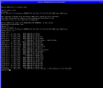</a>

	<p>Downloading the packages takes almost forever. Be patient.

	<p>Congratulations (again)! You are now fully done with the installation.

</ol>

<p><br>Debian GNU/Linux for DECstation is now installed and ready to be used.
Use this command to boot from the installed disk image:<pre>
	<b>gxemul -X -e3max -o 'root=/dev/sda1' -d debian_pmax.img vmlinux-2.4.31</b>

</pre>


<p><br>
<hr>
</p>

</body>
</html>
